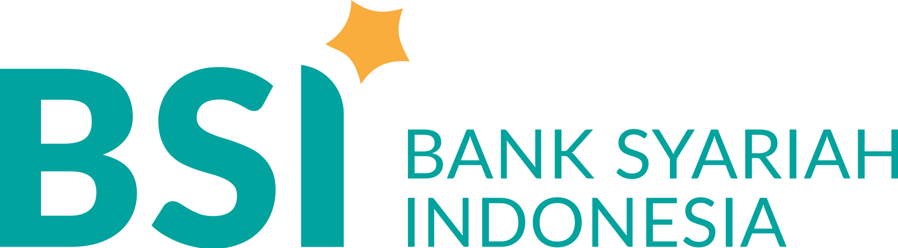
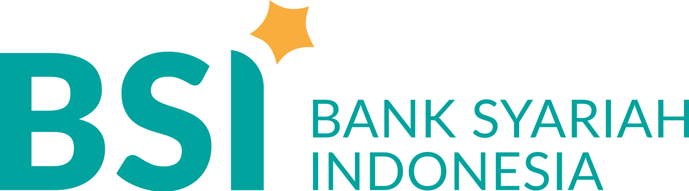

Hal - Hal yang sering ditanyakan
Masukan Dana & Penarikan Dana
Anda bisa memilih beberapa metode pembayaran untuk penarikan dan deposit dana anda secara cepat dan mudah.


 



Garansi
Kami sangat menyadari Bahwa keamanan Investasi Anda adalah hal yang paling utama, oleh sebab itu kami siap menyuguhkan komitmen dan pelayanan terbaik dengan memberikan Garansi 100% dari modal Anda jika terjadi Loss.
Syarat & Ketentuan Klaim Garansi :
- Kerugian yang di garansi Merupakan Hasil Trading dari Sistem Kami.
- Account di registrasi melalui Broker yang kami tunjuk dan melakukan registrasi di website kami.
- Kerugian telah mencapai 80% dari modal awal.
- Masih dalam masa kontrak.
- Mengajukan klaim paling lambat 2 hari Kerja terhitung sejak tanggal loss (system time).
Selengkapnya terdapat dalam Perjanjian Kontrak.
Syarat & Ketentuan
Selamat Datang di XTRADE !
Terima kasih telah mengakses situs, mengunduh, menggunakan layanan, produk dan/atau aplikasi
(“Aplikasi”) XTRADE. Aplikasi XTRADE adalah layanan aplikasi Platform Digital yang
diterbitkan oleh Kami. Pada saat Anda mengakses, mengunduh atau menggunakan Aplikasi XTRADE,
maka Syarat dan Ketentuan ini berlaku terhadap Anda. Dengan melanjutkan mengakses, mengunduh atau
menggunakan Aplikasi XTRADE, Anda mengakui dan menyetujui bahwa telah membaca dengan teliti,
memahami, menerima dan menyetujui seluruh Syarat dan Ketentuan ini yang akan berlaku sebagai perjanjian
antara Anda dengan Kami. Syarat dan Ketentuan ini juga berlaku setiap kali Anda melakukan transaksi
menggunakan Aplikasi XTRADE melalui mitra penyedia platform lain yang menandatangani perjanjian
kerjasama dengan Kami dan menggunakan Aplikasi XTRADE sebagai salah satu metode pembayaran
(“Mitra XTRADE”).
I. DEFINISI
- XTRADE adalah Platform Digital super lengkap, layanan sistem pembayaran/pembelian berupa produk elektronik, Platform Digital, transfer XTRADE, serta layanan pendukung lainnya, berbasis mobile yang dapat digunakan melalui Perangkat Telekomunikasi. XTRADE diselenggarakan oleh PT. XTRADE yang merupakan pemegang lisensi resmi dan telah memperoleh izin produk elektronik, Platform Digital, Transfer XTRADE, dan Layanan Pembayaran Elektronik(LPE);
- Rekening Escrow adalah rekening penampungan uang pada Bank yang sudah terdaftar di XTRADE, yang semata-mata digunakan untuk pemanfaatan fitur XTRADE;
- Akun member XTRADE adalah seluruh akun yang terdaftar pada aplikasi XTRADE oleh Pengguna dan dikuasai oleh Pengguna untuk memanfaatkan fasilitas yang disediakan oleh XTRADE ;
- Akun Premium atau Akun XTRADE Premium adalah Akun XTRADE yang dimiliki oleh Pengguna Terverifikasi;
- Bank adalah badan usaha yang menghimpun XTRADE dari masyarakat dalam bentuk simpanan dan menyalurkannya kepada masyarakat dalam bentuk kredit dan/atau bentuk-bentuk lainnya;
- Pengguna atau Pengguna XTRADE adalah setiap orang yang terdaftar sebagai pemilik Akun XTRADE dan/atau Akun XTRADE Premium serta pemilik Saldo XTRADE sebagaimana tercatat pada XTRADE;
- Pengguna Tidak Terverifikasi atau Pengguna XTRADE Tidak Terverifikasi adalah Pengguna XTRADE yang belum atau tidak menyelesaikan syarat verifikasi;
- Pengguna Terverifikasi atau Pengguna XTRADE Terverifikasi adalah Pengguna yang telah menyelesaikan syarat verifikasi dengan cara mengunggah foto wajah dan KTP pada akun Pengguna XTRADE ;
- Saldo XTRADE adalah jumlah produk elektronik yang tercatat dan tersimpan di XTRADE. Uang yang menjadi dasar penerbitan produk elektronik akan ditampung di Rekening Escrow dan dapat digunakan oleh Pengguna untuk melakukan transaksi dengan menggunakan XTRADE;
- Nomor Ponsel adalah nomor telepon seluler (handphone) atau ponsel pintar (smartphone) yang didaftarkan oleh Pengguna untuk mengakses layanan XTRADE;
- Perangkat Telekomunikasi adalah telepon genggam atau telepon seluler (ponsel, handphone), atau ponsel pintar, komputer pribadi berbentuk tablet atau perangkat telekomunikasi lainnya dan menggunakan Sistem Operasi Android atau IOS ataupun sistem operasi lain yang akan ada di masa mendatang, yang teknologinya mendukung layanan XTRADE;
- Gerai DAN UMKM adalah pihak-pihak baik badan hukum maupun badan usaha ataupun perorangan yang melayani Transaksi menggunakan XTRADE berdasarkan perjanjian kerja sama dengan PT. XTRADE dan/atau mitra XTRADE atau cara kerjasama lainnya;
- Transaksi adalah seluruh transaksi yang dapat dilakukan oleh Pengguna menggunakan XTRADE, baik di dalam wilayah Indonesia maupun di luar wilayah Indonesia (sebagaimana relevan), baik yang telah tersedia melalui fitur-fitur pada aplikasi XTRADE, maupun transaksi yang akan dikembangkan di masa yang akan datang;
- Akun Mitra adalah pihak ketiga yang bekerjasama dengan PT. XTRADE untuk melakukan penyediaan layanan-layanan atau fungsi-fungsi tertentu agar dapat digunakan melalui XTRADE.
II. KETENTUAN UMUM
- XTRADE baru dapat digunakan setelah Pengguna menyetujui Syarat dan Ketentuan dan Kebijakan Privasi pada aplikasi XTRADE, serta melakukan aktivasi atau pendaftaran dengan menggunakan Nomor Ponsel (Handphone) serta memberikan informasi yang dibutuhkan;
- Setiap Nomor Ponsel (Handphone) hanya dapat digunakan untuk 1 (satu) kali pendaftaran XTRADE ;
- Pengguna dapat melakukan Transaksi apapun apabila memiliki Saldo XTRADE yang mencukupi.
III. AKTIVASI XTRADE
Pengguna XTRADE dapat membuka akun XTRADE pertama kali dengan cara:
- Mengunduh aplikasi XTRADE secara langsung melalui Perangkat Telekomunikasi yang dimiliki sebagaimana yang tersedia di Google Playstore (untuk Android) dan Apple-App Store (untuk IOS) dan melakukan instalasi XTRADE pada Perangkat Telekomunikasi;
- Setelah melakukan instalasi XTRADE pada Perangkat Telekomunikasi, Pengguna dapat melakukan proses aktivasi dengan mengikuti petunjuk dan menyediakan informasi, antara lain:
- Nama akun dari Pengguna;
- Nama akun dari Pengguna;
- PIN Transaksi (6 angka) yang dipilih sendiri oleh Pengguna dalam melakukan transaksi;
- Apabila Pengguna bermaksud meningkatkan status Akun XTRADE Pengguna menjadi menjadi Akun Premium, maka Pengguna akan diminta dan bersedia untuk mengunggah foto KTP pada akun Pengguna XTRADE dan memiliki saldo minimal 100.000 pada aplikasi yang telah disediakan oleh XTRADE . Setiap permintaan pendaftaran Akun Premium tersebut akan dianggap sebagai permintaan yang sah dari Pengguna
- Seluruh data atau informasi yang Pengguna kirimkan untuk pendaftaran Akun Premium akan disimpan oleh PT. XTRADE dalam rangka melakukan verifikasi terhadap permintaan Akun Premium dari Pengguna, dan akan digunakan untuk metode otentikasi foto wajah dan KTP sebagaimana diatur dalam Syarat dan Ketentuan XTRADE;
- Persetujuan dan/atau penolakan atas permohonan verifikasi Pengguna merupakan kewenangan mutlak PT. XTRADE dengan memperhatikan ketentuan hukum dan peraturan perundang-undangan yang berlaku. PT. XTRADE dapat, sewaktu-waktu, membatalkan persetujuan atas permohonan verifikasi Pengguna sehingga status akun Pengguna menjadi tidak terverifikasi;
- Pengguna wajib menjamin kebenaran dan keakuratan seluruh data dan informasi yang disampaikan Pengguna dalam rangka aktivasi akun XTRADE maupun verifikasi Akun Premium XTRADE. Pengguna bertanggung jawab secara penuh apabila di kemudian hari ditemukan bahwa terdapat data dan informasi yang disampaikan Pengguna yang tidak akurat, salah, dan/atau palsu.
IV. Kata Sandi, PIN Transaksi, dan OTP
Dalam hal otentikasi dan/atau verifikasi, XTRADE memiliki 3 metode yaitu melalui Kata Sandi, PIN Transaksi, dan OTP.
- Kata Sandi
- Kata Sandi adalah sistem keamanan berupa kumpulan huruf dan atau angka yang terdiri dari beberapa karakter yang digunakan oleh pengguna XTRADE sebagai kata rahasia untuk masuk ke dalam akun XTRADE;
- Kata Sandi di dalam sistem keamanan XTRADE digunakan hanya pada saat masuk ke dalam akun pengguna XTRADE;
- Dengan melakukan aktivasi Kata Sandi, Pengguna juga mengerti dan menyetujui untuk memberikan akses kepada PT. XTRADE terhadap galeri yang terpasang pada Perangkat Telekomunikasi milik Pengguna, untuk selanjutnya dapat memindai foto wajah dan KTP Pengguna dan menyimpan pada aplikasi XTRADE untuk mengidentifikasi akun Pengguna;
- Pengguna setuju untuk menanggung semua risiko yang terkait bila terjadi suatu proses akses yang tidak terotorisasi dan/atau penggunaan Perangkat Telekomunikasi secara tidak sah oleh pihak ketiga manapun dan untuk sepenuhnya bertanggung jawab atas setiap konsekuensi yang terkait dengan hal tersebut.
- PIN (Personal Identification Number)
- PIN adalah nomor identifikasi pribadi yang dibuat dan ditentukan oleh Pengguna pada saat Pengguna melakukan aktivasi XTRADE untuk melakukan verifikasi identitas Pengguna dalam sistem keamanan XTRADE;
- Pengguna akan diminta memasukan PIN untuk memverifikasi suatu pembayaran tertentu dan/atau pemanfaatan fitur-fitur tertentu, sebagaimana ditentukan berdasarkan diskresi PT. XTRADE, untuk memastikan keabsahan atau melakukan verifikasi bahwa Transaksi benar-benar dilakukan oleh Pengguna
- Pengguna wajib menjaga kerahasiaan PIN dan bertanggung jawab sepenuhnya atas kerahasiaan PIN. Kerugian yang timbul akibat kegagalan/kelalaian Pengguna dalam menjaga kerahasiaan kode PIN merupakan tanggung jawab Pengguna sepenuhnya. Setiap pengiriman PIN yang diverifikasi dari akun XTRADE milik Pengguna akan dianggap sebagai Transaksi dan/atau aktivitas yang sah dari Pengguna, dan oleh karenanya akan mengikat dan memiliki akibat hukum terhadap Pengguna yang bersangkutan;
- Kecuali ditentukan lain, PIN dapat diubah dengan metode atau sarana otentikasi lainnya yang disediakan oleh PT. XTRADE atau oleh pihak lain yang bekerjasama dengan PT. XTRADE dimana metode atau sarana otentikasi tersebut telah mendapat persetujuan dari PT. XTRADE;
- Pengguna setuju untuk menanggung semua risiko yang terkait bila mengungkapkan PIN kepada pihak ketiga manapun dan akan sepenuhnya bertanggung jawab atas setiap konsekuensi apapun yang timbul dari dan terkait dengan hal tersebut. vi. Pihak PT. XTRADE tidak mengetahui dan tidak akan pernah meminta Pengguna memberitahukan PIN kepada PT. XTRADE.
- OTP (Kode Sandi Sekali Pakai / One Time Password)
- OTP (Kode Sandi Sekali Pakai / One Time Password) adalah kode sandi yang dikirim melalui Layanan Pesan Singkat (SMS) ke nomor telepon Pengguna yang terdaftar pada aplikasi XTRADE, yang berfungsi untuk melakukan verifikasi atas Transaksi atau tindakan tertentu yang dilakukan melalui XTRADE;
- Pengguna wajib menjaga kerahasiaan OTP dan bertanggung jawab sepenuhnya atas data diri, informasi, maupun keamanan dan ketersediaan serta penguasaan atas Perangkat Telekomunikasi serta Nomor Ponsel (Handphone) yang digunakan untuk menerima kode OTP. Kerugian yang timbul akibat kegagalan/kelalaian Pengguna dalam menjaga kerahasiaan dan keamanan OTP merupakan tanggung jawab Pengguna sepenuhnya. Setiap kode OTP yang berhasil terverifikasi dari akun XTRADE akan dianggap sebagai Transaksi dan/atau aktivitas yang sah dari Pengguna, dari dan oleh karenanya akan mengikat dan memiliki akibat hukum terhadap Pengguna yang bersangkutan;
- Pengguna setuju untuk menanggung semua risiko yang terkait bila mengungkapkan kode OTP kepada pihak ketiga manapun dan untuk sepenuhnya bertanggung jawab atas setiap konsekuensi yang terkait dengan hal tersebut;
- Pihak PT. XTRADE tidak mengetahui dan tidak akan pernah meminta Pengguna memberitahukan OTP kepada PT. XTRADE.
Jika Pengguna mengakses akun XTRADE melalui pihak ketiga termasuk namun tidak terbatas pada Gerai DAN UMKM, Mitra, Bank, aplikasi lain atau pihak ketiga manapun yang bekerja sama dengan PT. XTRADE, maka Pengguna wajib menjaga keamanan penggunaan termasuk namun tidak terbatas terhadap metode otentikasi dan/atau otorisasi dari pihak ketiga (jika ada). XTRADE tidak bertanggung jawab terkait dengan metode otentikasi dan/atau otorisasi yang dimiliki pihak ketiga.
V. TRANSAKSI TOP UP (ISI SALDO)
Transaksi top up adalah transaksi pengisian produk elektronik menjadi Saldo XTRADE.
- Terdapat beberapa metode untuk Transaksi top up sebagai berikut:
- Anjungan Tunai Mandiri (ATM);
- Fitur Debit Langsung (Direct Debit);
- Internet Banking;
- SMS Banking; dan;
- Mitra
- PT. XTRADE tidak menyimpan informasi yang digunakan Pengguna dalam melakukan transaksi top up sehubungan dengan kata sandi (password) atau token atau kode keamanan lain dalam bentuk apapun, baik sementara atau permanen ke dalam sistem XTRADE. Proses validasi transaksi yang dilakukan melalui Bank atau penyelenggara transaksi akan langsung dilakukan oleh pihak Bank atau penyelenggara transaksi yang bersangkutan;
- Proses Transaksi top up melalui Bank menggunakan metode-metode di atas, akan diambilalih oleh dan diproses melalui sistem perbankan. Aplikasi XTRADE hanya akan meneruskan status Transaksi “Berhasil” atau “Gagal” dari Bank;
- Dalam hal Transaksi top up dinyatakan “Berhasil” maka saldo Pengguna di rekening pada Bank yang bersangkutan otomatis akan berkurang sedangkan Saldo XTRADE akan bertambah untuk jumlah yang sesuai. Apabila Saldo XTRADE belum bertambah maka Pengguna dapat menghubungi XTRADE melalui Layanan Pengguna (Customer Care);
- Pada metode SMS Banking, operator telekomunikasi akan mengenakan biaya pengiriman token melalui SMS, dimana biaya tersebut ditentukan secara langsung oleh operator telekomunikasi dan ditanggung oleh Pengguna;
- Pengguna memahami bahwa Transaksi top up yang dilakukan melalui kanal pihak ketiga dapat mengalami gangguan sistem dan/atau jaringan dari waktu ke waktu, yang sepenuhnya merupakan tanggung jawab pihak ketiga tersebut. PT. XTRADE tidak bertanggung jawab atas gangguan tersebut, namun PT. XTRADE akan berusaha secara wajar untuk menyelesaikan gangguan dengan kanal pihak ketiga;
- Dalam hal transaksi top up melalui fitur debit langsung (direct debit) dari sumber XTRADE Pengguna yang terdapat pada pihak ketiga, PT. XTRADE akan meneruskan instruksi yang Pengguna berikan terkait aktivitas debit langsung (direct debit) tersebut kepada pihak ketiga terkait
- Informasi yang dimasukkan oleh Pengguna pada fitur debit langsung (direct debit) dapat melekat pada akun XTRADE Pengguna, sehingga risiko yang mungkin timbul pada akun XTRADE Pengguna dapat mempengaruhi fitur debit langsung (direct debit). Untuk menghindari keragu-raguan, segala risiko yang muncul akibat kesalahan, kelalaian Pengguna dan/atau faktor lain yang tidak disebabkan karena kesalahan PT. XTRADE, bukan merupakan tanggung jawab PT. XTRADE;
- Biaya yang dibebankan kepada Pengguna XTRADE adalah biaya yang ditetapkan oleh XTRADE sebagaimana tunduk pada biaya jasa yang berlaku. PT. XTRADE akan menginformasikan biaya jasa yang berlaku tersebut dari waktu ke waktu.
Saat ini atau selama berlangsungnya masa promosi, PT. XTRADE dapat memberikan kuota bebas biaya administrasi kepada Pengguna. Informasi kuota bebas biaya administrasi dapat dilihat pada aplikasi XTRADE saat Pengguna akan melakukan Transaksi (sebagaimana relevan). PT. XTRADE berhak sewaktu-waktu mengubah bentuk dan masa promosi dengan memberikan pemberitahuan melalui media yang ditentukan oleh PT. XTRADE.
VI. FITUR-FITUR APLIKASI XTRADE
Pengguna XTRADE dapat melakukan berbagai Transaksi melalui fitur-fitur yang tersedia pada aplikasi XTRADE.
- SALDO XTRADE
- Terhadap Saldo XTRADE tidak berlaku perhitungan bunga, sehingga Pengguna tidak akan memperoleh bunga dalam bentuk apapun. Saldo XTRADE bukan merupakan simpanan sebagaimana dimaksud dalam Undang-Undang tentang Perbankan dan Undang-Undang tentang Perbankan Syariah dan tidak akan dijamin oleh Lembaga Penjamin Simpanan sebagaimana diatur dalam Undang-Undang tentang Lembaga Penjamin Simpanan;
- Pengguna dapat memeriksa Saldo XTRADE melalui aplikasi XTRADE yang terhubung dengan layanan XTRADE
- Saldo XTRADE hanya dapat digunakan untuk melakukan Transaksi melalui aplikasi XTRADE . PT. XTRADE tidak akan menggunakan Saldo XTRADE untuk membiayai kegiatan di luar kewajiban XTRADE kepada Pengguna, Gerai DAN UMKM serta mitra lainnya yang bekerja sama dengan PT. XTRADE;
- Saldo XTRADE dapat digunakan atau ditransaksikan seluruhnya sampai bersaldo nihil.
- TARIK SALDO (CASH OUT)
- Tarik saldo (Cash Out) adalah fitur penarikan Saldo XTRADE melalui rekening Bank yang terdaftar dalam aplikasi XTRADE atau melalui pihak lain yang bekerjasama dengan XTRADE ;
- Jumlah saldo penarikan ditentukan oleh Pengguna XTRADE dengan ketentuan mengikuti jumlah maksimum dan minimum pada sekali penarikan, yang tertera dalam aplikasi XTRADE;
- Biaya yang berlaku dalam penarikan ke rekening bank akan dibebankan ke Pengguna XTRADE dan akan dipotong dari Saldo XTRADE saat penarikan sedang diproses. Biaya yang berlaku akan diinformasikan dari waktu ke waktu oleh PT. XTRADE kepada Pengguna, termasuk jika ada promo bebas biaya tarik saldo yang ditetapkan oleh XTRADE;
- PT. XTRADE tidak bertanggung jawab atas kesalahan Pengguna XTRADE dalam menginput informasi Bank yang didaftarkan oleh Pengguna XTRADE. PT. XTRADE juga tidak bertanggung jawab apabila penarikan Saldo XTRADE dilakukan oleh Pengguna ke rekening tabungan di suatu Bank yang bukan atas nama Pengguna sebagai penerima uang kiriman. Seluruh akibat hukum yang timbul dari penarikan Saldo XTRADE yang dilakukan Pengguna merupakan tanggung jawab Pengguna sepenuhnya;
- PT. XTRADE tidak bertanggung jawab jika terjadi masalah pada pihak Bank dan/atau Mitra, sehingga tidak dapat memproses penarikan Saldo XTRADE sejauh PT. XTRADE sudah berhasil mengirimkan instruksi transfer kepada Bank dan/atau Mitra yang bersangkutan
- Fitur tarik saldo hanya dapat diakses dan digunakan oleh Akun Premium sesuai Syarat dan Ketentuan ini.
- KIRIM UANG (SEND MONEY)
- Kirim uang (Send Money) merupakan fitur XTRADE dimana Pengguna dapat mengirimkan sebagian atau seluruh Saldo XTRADE yang tersedia dan/atau saldo pada kartu yang tersimpan pada aplikasi XTRADE, kepada Pengguna XTRADE lain, maupun kepada non-Pengguna XTRADE melalui rekening Bank. Fitur ini juga memungkinkan Pengguna dapat mengirimkan sejumlah uang tunai kepada Pengguna XTRADE lain atau non-Pengguna XTRADE melalui Mitra yang bekerjasama dengan PT. XTRADE (Send to Cashier), dengan terlebih dahulu pengirim memasukkan informasi identitas penerima (termasuk namun tak terbatas pada nomor telepon penerima, nama penerima sesuai kartu identitas, dan tanggal lahir penerima) serta nominal uang yang akan dikirimkan pada aplikasi XTRADE;
- Pengguna akan diarahkan untuk memilih metode pengiriman yang tersedia, dan selanjutnya memasukkan informasi mengenai nomor telepon tujuan yang terdaftar sebagai Pengguna XTRADE atau nomor rekening Bank, nominal yang akan dikirim serta catatan (bila ada);
- Dengan menggunakan fitur Kirim Uang (Send Money), Pengguna mengerti dan menyetujui untuk memberikan akses kepada PT. XTRADE terhadap kontak nomor handphone pada perangkat elektronik Pengguna untuk digunakan sehubungan dengan pengiriman uang kepada sesama Pengguna XTRADE
- Pengguna bertanggung jawab untuk memastikan bahwa seluruh informasi yang dimasukkan oleh Pengguna adalah benar dan akurat. Segala akibat hukum yang disebabkan oleh kesalahan Pengguna dalam memasukan informasi nomor telepon tujuan dan/atau kesalahan input nominal dan/atau identitas penerima (pada Send to Cashier) yang akan dikirimkan sepenuhnya menjadi tanggung jawab Pengguna, dan PT. XTRADE tidak memiliki tanggung jawab dalam bentuk apapun;
- Pengguna juga sepenuhnya setuju dan memahami untuk bertanggung jawab atas kerahasiaan dan kebenaran informasi data penerima yang dimasukkan Pengguna pada aplikasi XTRADE untuk fitur Send to Cashier. Segala akibat hukum yang disebabkan oleh kesalahan Pengguna dalam memasukan informasi penerima tersebut dan/atau adanya klaim penerima sepenuhnya menjadi tanggung jawab Pengguna, dan PT. XTRADE tidak memiliki tanggung jawab dalam bentuk apapun. Pengguna setuju dan memahami bahwa informasi yang dimasukkan Pengguna akan sepenuhnya menjadi milik PT. XTRADE sesuai Kebijakan Privasi PT. XTRADE;
- Fitur kirim uang atas Saldo XTRADE dan fitur Send to Cashier hanya dapat diakses dan digunakan oleh Akun Premium sesuai Syarat dan Ketentuan ini.
- SIMPAN KARTU (SAVE CARD)
- Simpan kartu (Save Card) merupakan fitur XTRADE dimana Pengguna dapat menyimpan informasi terkait kartu debit dan/atau kartu kredit yang dikeluarkan oleh bank-bank yang bekerjasama dengan PT. XTRADE ke dalam akun Pengguna, yang dapat digunakan untuk melakukan Transaksi
- Untuk melakukan penyimpanan kartu, Pengguna harus memasukkan informasi nomor kartu debit dan/atau kredit, tanggal berakhir masa berlaku kartu, disertai 3 (tiga) digit nomor CVV. Pengguna XTRADE bertanggung jawab sepenuhnya terhadap kebenaran informasi kartu yang diberikan kepada PT. XTRADE. Dengan menggunakan fitur simpan kartu, Pengguna menjamin dan bertanggung jawab bahwa Pengguna adalah pemilik yang sah dari kartu debit dan/atau kartu kredit yang informasinya telah disimpan dalam fitur Simpan Kartu oleh Pengguna dan/atau Pengguna telah memperoleh persetujuan, kuasa, otorisasi, dan/atau wewenang dari pemilik yang sah dari kartu debit dan/atau kartu kredit yang informasinya telah disimpan dalam fitur Simpan Kartu oleh Pengguna;
- Pengguna akan diminta untuk memasukan OTP, pada aplikasi XTRADE, yang akan dikirimkan langsung oleh Bank penerbit kartu debit/kartu kredit Pengguna ke nomor telepon Pengguna yang terdaftar pada Bank yang mengeluarkan kartu debit/kredit pada halaman verifikasi di Aplikasi XTRADE;
- Kode OTP bersifat rahasia sehingga Pengguna tidak boleh mengungkapkannya kepada pihak manapun. Terhadap OTP tersebut, Pengguna tunduk pada syarat dan ketentuan yang berlaku pada Bank penerbit kartu debit/kartu kredit yang informasinya disimpan dalam fitur Simpan Kartu oleh Pengguna. PT. XTRADE tidak bertanggungjawab atas segala akibat dari ketidak-hati-hatian dari Pengguna dalam menjaga Nomor Ponsel (Handphone) yang dimilikinya termasuk tapi tidak terbatas pada peristiwa antara lain kehilangan, kerusakan, penyalahgunaan oleh pihak yang tidak bertanggungjawab atau pemalsuan. Pengguna bertanggung jawab sepenuhnya atas dan membebaskan PT. XTRADE dari segala akibat dan risiko yang timbul sehubungan dengan kelalaian Pengguna dalam menjaga kerahasiaan informasi data Pengguna yang dimilikinya dan/atau kode OTP;
- Untuk keperluan verifikasi kartu, maka Pengguna akan dikenakan biaya sementara sesuai kebijakan PT. XTRADE yang akan diberitahukan dari waktu ke waktu kepada Pengguna;
- Paling lambat dalam 14 (empat belas) Hari Kerja, PT. XTRADE akan melakukan proses verifikasi atas informasi kartu yang diberikan pengguna, setelah terverifikasi maka biaya tersebut akan dikembalikan kepada Pengguna;
- Kode CVV pada kartu debit dan/atau kredit pengguna bersifat rahasia dan sesuai ketentuan yang berlaku, PT. XTRADE sendiri tidak melakukan penyimpanan terhadap kode CVV milik Pengguna;
- Jenis Transaksi yang dapat dilakukan menggunakan sumber XTRADE melalui kartu debet adalah pembayaran GERAI DAN UMKM, pengisian saldo XTRADE (top up), dan kirim uang/transfer XTRADE, sementara, jenis Transaksi yang dapat dilakukan menggunakan sumber XTRADE melalui kartu kredit adalah hanya pembayaran kepada gerai dan UMKM.
- PENGATURAN TAGIHAN-TAGIHAN (MANAGE BILLS)
- Manage bills adalah fitur XTRADE yang memungkinkan Pengguna mengatur tagihan-tagihan yang dimilikinya dimana XTRADE akan memberikan notifikasi pengingat (reminder) untuk pembayaran tagihan;
- Pengguna dapat mengatur pengingat (reminder) untuk layanan tagihan-tagihan dengan pihak-pihak yang telah bekerjasama dengan PT. XTRADE sebagaimana yang tercantum dalam aplikasi XTRADE;
- Pengguna dapat mengatur tanggal penagihan yang dapat diubah-ubah sewaktu-waktu oleh Pengguna;
- XTRADE tidak akan memberikan reminder apabila Pengguna sudah melakukan pembayaran atas tagihannya;
- Pengguna dapat melakukan pengecekan atas detil pembayaran yang berhasil atas tagihannya di laman riwayat (history) pada aplikasi XTRADE;
- PT. XTRADE dapat menyediakan fitur pengaturan tagihan lainnya, termasuk namun tidak terbatas pada adanya fitur langganan (subscription) atas tagihan berdasarkan persetujuan Pengguna. Pengguna harus tunduk pada syarat dan ketentuan serta alur aktivasi fitur langganan, jika Pengguna ingin mengaktifkan fitur tersebut.
- PEMBELIAN ISI ULANG PULSA DAN PEMBAYARAN TAGIHAN
- Pembelian isi ulang pulsa operator telekomunikasi atau operator lainnya dapat dilakukan melalui aplikasi XTRADE dengan denominasi yang tersedia atau sesuai petunjuk yang ditampilkan dalam aplikasi XTRADE;
- Pembayaran tagihan pasca bayar atau tagihan rutin bulanan seperti tagihan listrik, tagihan air, tagihan berlangganan internet, tagihan telkom, dan tagihan rutin lainnya dapat dilakukan melalui aplikasi XTRADE;
- PT. XTRADE tidak bertanggung jawab atas kerugian akibat kesalahan/kelalaian Pengguna dalam menginput rincian informasi, nominal dan data pembayaran
- AJAK TEMAN (REFERRAL CODE)
- Ajak teman atau Referral Code adalah fitur dimana Pengguna dapat memberikan referensi kepada calon pengguna lain maupun relasi Pengguna untuk melakukan registrasi aplikasi XTRADE dengan cara membagikan link referral;
- Fitur ajak teman dari XTRADE merupakan bentuk promosi yang diberikan dengan kebijakan yang bervariasi dari waktu ke waktu. Pengguna memahami bahwa tiap kegiatan promosi memiliki syarat dan ketentuan berlaku;
- Pengguna bisa mengakses reward dari setiap kode referral yang berhasil digunakan oleh teman Pengguna berupa voucher, cashback atau bentuk hadiah lainnya yang diberikan oleh PT. XTRADE kepada Pengguna sesuai dengan kebijakan promosi yang berlaku, yang dapat berubah sewaktu-waktu;
- Pengguna dapat menggunakan reward tersebut pada GERAI DAN UMKM yang ditentukan oleh PT. XTRADE sesuai dengan kebijakan promosi yang berlaku saat itu;
- PT. XTRADE berhak, tanpa pemberitahuan sebelumnya, melakukan tindakan-tindakan yang diperlukan apabila diduga adanya tindakan kecurangan atau penyalahgunaan dari Pengguna;
- PT. XTRADE berhak untuk meminta identitas KTP dan foto, sewaktu-waktu jika diperlukan, untuk proses verifikasi terhadap Pengguna.
- PROMO (PROMO QUEST)
- Promo (Promo Quest) adalah salah satu fitur aplikasi dimana Pengguna diharuskan menyelesaikan beberapa tugas beragam, yang ditentukan oleh PT. XTRADE, untuk mendapatkan promosi yang bervariasi dari XTRADE;
- Tugas atau skenario dalam fitur pencarian promo dari XTRADE merupakan bentuk promosi yang diberikan dengan kebijakan yang bervariasi dari waktu ke waktu. Pengguna memahami bahwa tiap kegiatan promosi memiliki syarat dan ketentuan yang berlaku;
- Pengguna dapat menggunakan promosi tersebut di mitra-mitra, GERAI DAN UMKM XTRADE di seluruh Indonesia atau di mitra lain yang ditunjuk oleh PT. XTRADE sesuai dengan kebijakan promosi yang berlaku saat itu;
- PT. XTRADE berhak, tanpa pemberitahuan sebelumnya, melakukan tindakan-tindakan yang diperlukan apabila diduga adanya tindakan kecurangan atau penyalahgunaan dari Pengguna atas penggunaan fitur Promo Quest.
- LOYALITAS (LOYALTY)
- Loyalitas adalah fitur aplikasi XTRADE yang didasarkan pada kerjasama antara PT. XTRADE dengan GERAI DAN UMKM dalam bentuk kartu loyalitas dimana Pengguna mendapatkan poin loyalitas untuk setiap pembayaran melalui XTRADE yang dilakukan di GERAI DAN UMKM;
- Pengguna harus mengaktivasi kartu loyalitas yang tersedia pada menu “Kartu Loyalitas” untuk mendapatkan poin dan/atau benefit/ keuntungan yang ditawarkan tiap GERAI DAN UMKM kepada Pengguna;
- Pengguna dapat menukar poin loyalitas dengan voucher diskon yang dapat digunakan untuk Transaksi di GERAI DAN UMKM yang bekerjasama dengan PT. XTRADE dalam program loyalitas ini;
- Pengguna akan mendapatkan 1 (satu) Poin Loyalitas untuk setiap Transaksi sesuai ketentuan minimal pembelanjaan yang ditetapkan oleh PT. XTRADE yang dapat berubah dari waktu ke waktu dan akan diberitahukan kepada Pengguna. PT. XTRADE memiliki diskresi dan kewenangan penuh untuk menentukan syarat dan ketentuan tentang nilai Transaksi minimal yang menjadi syarat untuk mendapatkan Poin Loyalitas dan jumlah Poin Loyalitas yang dapat diperoleh dari minimal Transaksi tersebut;
- Pengguna harus menggunakan XTRADE sebagai metode pembayaran untuk mendapatkan poin loyalitas pada setiap Transaksi di GERAI DAN UMKM;
- Jumlah poin loyalitas yang didapatkan Pengguna bervariasi berdasarkan GERAI DAN UMKM yang dipilih oleh Pengguna;
- Poin loyalitas memiliki masa berlaku dimana apabila masa berlaku tersebut telah habis, maka poin loyalitas yang tersisa akan dikembalikan menjadi 0 (nol) poin;
- PT. XTRADE berhak, tanpa pemberitahuan sebelumnya, untuk mengambil tindakan-tindakan yang dirasa diperlukan kepada Pengguna yang diduga melakukan penyalahgunaan dalam mendapatkan promo dalam program ini.
- AKUN MITRA XTRADE
- Akun Mitra XTRADE adalah fitur untuk membantu Pengguna memenuhi kebutuhan pembayaran bisnis/ usaha perorangan. Akun Mitra XTRADE menyediakan pembayaran melalui link, fitur tarik saldo, dan fitur untuk melihat Transaksi dan status pembayaran;
- Pengguna XTRADE Terverifikasi dapat mengaktivasi Akun Mitra XTRADE dengan mengisi informasi profil usaha/ bisnis secara lengkap dan terperinci sesuai dengan form yang tersedia di aplikasi XTRADE;
- Dengan mengajukan aktivasi Akun Mitra XTRADE, Pengguna mengetahui dan menyetujui serta tunduk pada Syarat dan Ketentuan Akun Mitra XTRADE.
- PEMBELANJAAN DI GERAI DAN UMKM ATAU PEMBELIAN BARANG/JASA
- Pengguna dapat melakukan transaksi pembayaran untuk pembelanjaan di Gerai dan UMKM atau pembelian barang/jasa menggunakan aplikasi XTRADE termasuk sarana lainnya milik pihak ketiga yang terhubung dengan layanan XTRADE;
- Dalam transaksi pembayaran untuk pembelanjaan di gerai DAN UMKM atau pembelian barang/jasa menggunakan aplikasi XTRADE, Pengguna juga akan tunduk pada syarat dan ketentuan pembelian yang diberlakukan oleh Gerai dan UMKM dan/atau penyedia barang/jasa tersebut;
- Segala bentuk promosi pada Gerai DAN UMKM XTRADE tunduk pada masing-masing syarat dan ketentuan promosi yang berlaku serta periode promosi tertentu. Bentuk, syarat dan ketentuan, serta periode promosi merupakan wewenang mutlak PT. XTRADE.
- FEED
- Feed merupakan fitur yang dapat digunakan oleh Pengguna untuk membagikan aktivitas di aplikasi XTRADE serta informasi lainnya kepada sesama Pengguna XTRADE. Dengan mengaktivasi fitur Feed, Pengguna otomatis mengikuti kegiatan sesama Pengguna XTRADE pada halaman Feed;
- Pengguna dapat sewaktu-waktu menonaktifkan pembagian aktivitas kepada Pengguna XTRADE lainnya melalui halaman pengaturan profil
- Dengan menggunakan fitur Feed pada aplikasi XTRADE, Pengguna mengerti dan menyetujui untuk memberikan akses kepada PT. XTRADE terhadap kontak nomor handphone pada perangkat elektronik Pengguna untuk digunakan sehubungan dengan aktivitas pada fitur Feed;
- Pengguna mengerti segala konsekuensi yang timbul dari aktivasi fitur Feed dan bertanggung jawab atas penggunaan fitur Feed sesuai dengan Syarat dan Ketentuan ini, serta setuju untuk tidak menyalahgunakan fitur Feed untuk kepentingan yang dapat merugikan PT. XTRADE dan/atau Pengguna XTRADE lainnya.
- XTRADE PADA APLIKASI PIHAK KETIGA Pengguna yang melakukan Transaksi menggunakan layanan pembayaran pada aplikasi XTRADE melalui aplikasi atau platform milik pihak ketiga/partner/gerai DAN UMKM yang bekerjasama dengan PT. XTRADE, maka Pengguna mengerti dan memahami untuk tunduk pada syarat dan ketentuan yang lebih khusus yang diatur oleh pihak ketiga tersebut dan/atau syarat dan ketentuan khusus yang ditetapkan lebih lanjut oleh PT. XTRADE pada aplikasi pihak ketiga tersebut (sebagaimana relevan). PT. XTRADE tidak bertanggung jawab atas kelalaian/kesalahan Pengguna yang melakukan Transaksi di aplikasi milik pihak ketiga tersebut.
- KERJASAMA PIHAK KETIGA DALAM APLIKASI XTRADE Pengguna setuju dan menundukan diri pada Syarat dan Ketentuan Aplikasi XTRADE serta syarat dan ketentuan yang lebih khusus dalam produk atau fitur kerjasama pihak ketiga dengan PT. XTRADE yang dapat diakses dalam aplikasi XTRADE, baik yang tersedia saat ini maupun di masa mendatang dengan pemberitahuan sebelumnya, termasuk namun tidak terbatas pada bentuk kerjasama GERAI DAN UMKM, partner (termasuk bank), Mitra, maupun jasa layanan pembayaran/keuangan lainnya.
Akun XTRADE milik Pengguna akan berlaku selama akun tersebut tidak ditutup secara permanen, baik oleh Pengguna maupun oleh PT. XTRADE.
VIII. BIAYA-BIAYA LAYANAN XTRADE
- Biaya-biaya dalam penggunaan fitur-fitur XTRADE, yang ditetapkan oleh PT. XTRADE, Bank, mitra, maupun oleh pihak ketiga yang bekerjasama dengan PT. XTRADE, akan dipotong secara langsung dari Saldo XTRADE Pengguna dengan pemberitahuan terlebih dahulu. PT. XTRADE dapat memberlakukan promo bebas biaya dengan kuota dan masa periode tertentu yang dapat berubah sewaktu-waktu. Perubahan tersebut akan diinformasikan melalui media komunikasi yang ditentukan oleh XTRADE;
- Sehubungan dengan instrumen pembayaran yang dapat disimpan pada dan digunakan melalui aplikasi XTRADE, PT. XTRADE dapat menetapkan biaya pemrosesan transaksi pembayaran menggunakan instrumen pembayaran yang diterbitkan pihak lain, baik kartu debit, kartu kredit maupun produk elektronik selain XTRADE;
- Bank maupun institusi penerbit instrumen pembayaran lain yang bekerja sama dengan PT. XTRADE dapat mengenakan biaya untuk setiap Transaksi melalui Platform Digital XTRADE sesuai kebijakan Bank penerbit instrumen pembayaran terkait.
IX. PERLINDUNGAN XTRADE ATAS TRANSAKSI TIDAK SAH (“PERLINDUNGAN XTRADE/XTRADE Protection”)
- Perlindungan XTRADE merupakan suatu bentuk perlindungan yang diberikan oleh PT. XTRADE kepada Pengguna Terverifikasi untuk melindungi dari transaksi tidak sah yang diakibatkan oleh pengambilalihan akun (account take over/”ATO”);
- Pengguna Terverifikasi harus terlebih dahulu mengikuti prosedur dan tahapan yang ditetapkan oleh PT. XTRADE untuk dapat melakukan klaim Perlindungan XTRADE;
- Bentuk-bentuk ATO yang diakui oleh XTRADE adalah:
- Kehilangan perangkat telekomunikasi Pengguna XTRADE yang menyebabkan Akun XTRADE tidak dapat diakses oleh Pengguna. Terbatas pada 1 kali kejadian/terhadap laporan kehilangan yang pertama;
- Serangan brute force atau tindakan peretasan Akun XTRADE tanpa izin dengan menggunakan sistem atau perangkat tertentu; atau
- Perlindungan XTRADE tidak mencakup keadaan berikut:
- Kasus kelalaian/penipuan Pengguna di luar bentuk ATO yang diakui XTRADE;
- Pengguna yang diduga melakukan klaim palsu dan/ penipuan;
- Malware dalam alat Pengguna;
- Transaksi pada perangkat/lingkungan terpercaya;
- Sistem pihak ke-3 yang dipengaruhi oleh peretasan/malfungsi/downtime, force majeure.
- Perlindungan XTRADE berlaku untuk Saldo XTRADE atau kartu yang disimpan dalam Akun XTRADE baik berupa kartu kredit atau kartu debit;
- Untuk melakukan klaim Perlindungan XTRADE, Pengguna Terverifikasi harus memberitahukan XTRADE dalam waktu 2x24 jam sejak terjadinya ATO/ potensi ATO melalui jalur pengaduan resmi Layanan Pengguna (Customer Care) XTRADE. Kegagalan Pengguna memberikan pemberitahuan sesuai kurun waktu yang ditentukan akan mengakibatkan Perlindungan XTRADE tidak dapat diproses;
- Pengguna wajib menyediakan informasi untuk keperluan investigasi sebagaimana diminta oleh PT. XTRADE secara tertulis. Kegagalan untuk menyediakan info/dokumentasi yang diminta PT. XTRADE akan mengakibatkan Perlindungan XTRADE tidak dapat diproses;
- Khusus bagi nilai kerugian akibat ATO mulai dari Rp1.000.000 (satu juta Rupiah), harus disertai dengan laporan pengaduan Kepolisian kepada PT. XTRADE; Kehilangan perangkat telekomunikasi Pengguna XTRADE yang menyebabkan Akun XTRADE tidak dapat diakses oleh Pengguna, harus disertai juga dengan laporan pengaduan Kepolisian;
- Perlindungan XTRADE memberikan penggantian sesuai jumlah kerugian Pengguna Terverifikasi dengan nominal maksimal Rp5.000.000 (lima juta Rupiah) per Pengguna Terverifikasi;
- Kebijakan dan keputusan mengenai Perlindungan XTRADE, persyaratan, pengecualian dan jenis ATO dalam Perlindungan XTRADE, sumber XTRADE yang termasuk dalam Perlindungan XTRADE , serta nominal penggantian, adalah mutlak kewenangan PT. XTRADE. Kebijakan PT. XTRADE dalam Perlindungan XTRADE diberikan dengan tidak mengesampingkan kewajiban Pengguna untuk menjaga segala bentuk informasi pribadi, termasuk namun tidak terbatas pada informasi sensitif berupa nama, tanggal lahir, nomor handphone terdaftar atau nomor handphone alternatif lainnya, PIN, OTP atau informasi verifikasi lainnya, nomor kartu yang disimpan dalam Akun XTRADE (maupun yang tidak disimpan dalam Akun XTRADE) sehubungan dengan kepemilikan Akun XTRADE Pengguna;
- PT. XTRADE atau XTRADE tidak dapat dituntut atas keberatan dalam bentuk apapun mengenai keputusan mengenai Perlindungan XTRADE;
- Kebijakan Perlindungan XTRADE beserta syarat dan ketentuannya dapat berubah sewaktu-waktu, dan akan diberitahukan melalui media yang ditunjuk oleh PT. XTRADE.
X. Platform Digital XTRADE
- Saldo XTRADE dan/atau instrumen pembayaran yang disimpan pada XTRADE dapat digunakan untuk pembayaran layanan pada aplikasi XTRADE maupun pembelanjaan pada gerai DAN UMKM , dengan tunduk pada kebijakan penerbit instrumen pembayaran lain yang bekerja sama dengan PT. XTRADE;
- PT. XTRADE hanya meneruskan instruksi Pengguna kepada pihak penerbit instrumen pembayaran untuk melakukan pembayaran menggunakan instrumen pembayaran yang diterbitkan pihak lain yang bekerjasama dengan PT. XTRADE melalui XTRADE. Transaksi pembayaran Pengguna hanya dapat diproses jika pihak penerbit instrumen pembayaran terkait mengotorisasi instruksi tersebut;
- Transaksi yang telah dikonfirmasi oleh Pengguna untuk diproses tidak dapat dibatalkan sepihak oleh Pengguna. PT. XTRADE memiliki wewenang dan diskresi untuk menentukan keputusan terhadap permintaan pembatalan tersebut berdasarkan pengkajian kasus per kasus oleh PT. XTRADE;
- PT. XTRADE merupakan penyelenggara sistem pembayaran dan Pengguna memahami bahwa PT. XTRADE tidak memiliki kendali atau bertanggung jawab atas barang atau jasa yang dibayar dengan XTRADE. Setiap keluhan dan/atau klaim oleh Pengguna terhadap penerbit instrumen pembayaran selain XTRADE merupakan tanggung jawab penerbit instrumen pembayaran terkait, namun PT. XTRADE dapat menerima keluhan dan/atau klaim Pengguna untuk diteruskan kepada penerbit instrumen pembayaran terkait. Dalam hal ini, PT. XTRADE tidak bertanggung jawab untuk segala kerugian yang timbul sehubungan dengan keluhan dan/atau klaim tersebut;
- Pengguna dapat memberikan instruksi elektronik untuk menghapus data instrumen pembayaran dari fitur Platform Digital XTRADE;
- Jika Pengguna meminta pengembalian XTRADE (refund) pada instrumen pembayaran lain pada Platform Digital XTRADE, maka klaim pengembalian XTRADE tersebut dapat disampaikan langsung ke gerai DAN UMKM terkait. PT. XTRADE akan meneruskan klaim pengembalian XTRADE instrumen pembayaran lain berdasarkan permintaan Gerai DAN UMKM kepada penerbit instrumen pembayaran terkait. Pengguna juga dapat menyampaikan klaim pengembalian XTRADE instrumen pembayaran lain kepada PT. XTRADE selambat-lambatnya dalam waktu 7 (tujuh) hari kalender sejak tanggal Transaksi dengan menyampaikan bukti pendukung yang cukup. Selanjutnya PT. XTRADE akan meneruskan klaim pengembalian XTRADE instrumen pembayaran lain kepada penerbit instrumen pembayaran terkait berdasarkan hasil tinjauan PT. XTRADE atas klaim tersebut.
XI. KOREKSI
- PT. XTRADE dapat sewaktu-waktu melakukan koreksi (mendebet atau mengkredit) Saldo XTRADE apabila menurut catatan PT. XTRADE terjadi kesalahan dalam Transaksi, sistem, jaringan, maupun kesalahan dalam bentuk lain, termasuk namun tidak terbatas apabila terdapat permintaan dari Pengguna atau pejabat berwenang berdasarkan peraturan yang berlaku;
- Terhadap permintaan koreksi oleh pihak ketiga, PT. XTRADE akan melakukan tinjauan dan memutuskan berdasarkan penilaian dan kebijakan PT. XTRADE. PT. XTRADE tidak akan melakukan koreksi terhadap Saldo XTRADE tanpa adanya informasi yang dianggap cukup bagi PT. XTRADE untuk membuktikan adanya kesalahan dalam Transaksi;
- Sehubungan dengan kepentingan koreksi sebagaimana disebutkan dalam angka 1) dan angka 2), Pengguna dengan ini memberikan kuasa yang tidak dapat ditarik kembali kepada PT. XTRADE untuk mendebet dan/atau mengkredit Saldo XTRADE Pengguna. Kuasa sebagaimana dimaksud akan terus berlaku dan tidak dapat berakhir karena alasan apapun juga termasuk karena alasan-alasan sebagaimana diatur dalam Pasal 1813, 1814, dan 1816 Kitab Undang-Undang Hukum Perdata;
XII. PEMBLOKIRAN ATAS AKUN XTRADE
- Akun XTRADE dapat diblokir seluruhnya atau terhadap sebagian fitur, sesuai dengan kebijakan PT. XTRADE, dalam hal:
- Pengguna memasukkan PIN dan/atau kata sandi (password) yang salah sebanyak 3 (tiga) kali berturut-turut;
- Pengguna mengajukan permintaan resmi, baik karena adanya laporan Pengguna bahwa telepon seluler telah hilang atau telah dicuri atau diretas. Pengguna wajib menyertakan informasi/dokumen tambahan sehubungan dengan keperluan permintaan Pengguna;
- Dilakukan secara sepihak oleh PT. XTRADE dikarenakan terdapat hal yang menurut kebijakan PT. XTRADE memiliki suatu indikasi yang merugikan PT. XTRADE dan/atau indikasi pelanggaran serta ketentuan hukum yang berlaku, dengan atau tanpa pemberitahuan terlebih dahulu kepada Pengguna, termasuk namun tidak terbatas pada:
- Adanya permintaan dari otoritas negara atau otoritas penegak hukum yang berwenang, atau;
- Apabila Pengguna menggunakan layanan XTRADE yang menyebabkan terjadinya pelanggaran terhadap Syarat dan Ketentuan Pengguna dan/atau Kebijakan Privasi XTRADE, atau;
- Apabila Pengguna memberikan data/ informasi dan keterangan yang tidak benar atau menyesatkan pada saat melakukan pendaftaran atau selama menggunakan XTRADE, atau;
- Adanya indikasi penyalahgunaan XTRADE untuk kegiatan yang melanggar hukum dan peraturan perundang-undangan yang berlaku, atau;
- Akun XTRADE tidak digunakan untuk jangka waktu minimum selama 6 (enam) bulan berturut-turut;
- Apabila PT. XTRADE berdasarkan pertimbangannya sendiri yang cukup beralasan memiliki alasan kuat lainnya.
- Aktivasi ulang atas rekening yang diblokir yang disebabkan alasan-alasan sebagaimana dimaksud di bagian 1. di atas merupakan wewenang PT. XTRADE sepenuhnya dan PT. XTRADE juga memiliki wewenang penuh untuk menonaktifkan sementara atau secara permanen akses Pengguna terhadap sebagian atau seluruh layanan/fitur XTRADE.
XIII. PENUTUPAN REKENING XTRADE
- Rekening XTRADE dapat ditutup karena hal-hal berikut:
- Permintaan resmi dari Pengguna yang disampaikan melalui jalur pengaduan resmi Layanan Pelanggan (Customer Care), dengan memenuhi rangkaian proses dan persyaratan yang diminta oleh PT. XTRADE;
- Adanya permintaan dari otoritas negara atau otoritas penegak hukum yang berwenang;
- Kebijakan PT. XTRADE berdasarkan hukum dan peraturan perundang-undangan yang berlaku;
- Penghentian kegiatan operasional XTRADE karena alasan apapun.
- PT. XTRADE akan mengembalikan saldo produk elektronik XTRADE kepada Pengguna atas adanya penutupan akun XTRADE setelah dikurangi biaya terutang (bila ada), kecuali jika berdasarkan pertimbangan PT. XTRADE diperlukan adanya penahanan bagian tertentu dari saldo XTRADE, misalnya karena keyakinan yang wajar bahwa bagian tersebut sehubungan dengan atau disebabkan oleh penipuan, penyalahgunaan, tindak pelanggaran hukum lainnya, atau pelanggaran terhadap Syarat dan Ketentuan ini;
- Sehubungan dengan penutupan akun XTRADE, Pengguna dan XTRADE setuju untuk mengesampingkan keberlakuan Pasal 1266 Kitab Undang-Undang Hukum Perdata, sepanjang mengenai diperlukannya suatu putusan pengadilan untuk penutupan akun XTRADE dan/atau pengakhiran Syarat dan Ketentuan ini.
XIV. INFORMASI DAN JALUR PENGADUAN RESMI
Pengguna dapat mengajukan pertanyaan seputar layanan XTRADE atau menyampaikan keluhan dengan menghubungi Layanan Pengguna (Customer Care) XTRADE melalui: cs@XTRADE theXTRADE.com
Informasi terkait layanan XTRADE serta promosi yang berlangsung dapat dilihat di aplikasi XTRADE atau situs: https://XTRADE.com
XV. BATASAN TANGGUNG JAWAB
- Untuk mencegah terjadinya penyalahgunaan data atau Akun XTRADE Pengguna maka Pengguna wajib mengingat dan menjaga kerahasiaan informasi data yang dimilikinya, termasuk namun tidak terbatas pada Nomor Ponsel (Handphone) yang digunakan pada akun XTRADE atau Nomor Ponsel alternatif , kata sandi (password) atau PIN maupun Kode OTP, jawaban dari pertanyaan rahasia yang didaftarkan atau data lainnya yang diberikan Pengguna atau diterima oleh Pengguna terkait Transaksi atau atas setiap kegiatan atau Transaksi yang terjadi/dilakukan oleh Pengguna dengan tidak mengungkapkannya kepada pihak manapun. Pengguna bertanggung jawab sepenuhnya atas segala akibat dan risiko yang timbul sehubungan dengan kelalaian Pengguna dalam menjaga kerahasiaan informasi data Pengguna yang dimilikinya;
- Pengguna wajib menjaga informasi sebagaimana disebut di atas, dari peristiwa antara lain kehilangan, kerusakan, penyalahgunaan oleh pihak yang tidak bertanggungjawab atau pemalsuan. Pengguna dengan ini mengetahui dan menyetujui untuk melepaskan PT. XTRADE dari tanggung jawab dan ganti kerugian dalam bentuk apapun kepada Pengguna atau pihak manapun atas hal-hal yang terjadi di luar kesalahan dan/atau kelalaian PT. XTRADE termasuk tetapi tidak terbatas pada hal-hal:
- Kehilangan atau kerusakan Perangkat Telekomunikasi atau Nomor Ponsel;
- Akses tidak sah terhadap informasi pribadi Pengguna yang terjadi di luar lingkup tanggung jawab PT. XTRADE atau pada/melalui aplikasi milik pihak ketiga;
- Setiap kerugian yang terjadi yang diakibatkan karena Pengguna XTRADE terindikasi melanggar hukum dan/atau terdapat penyalahgunaan oleh pihak lain yang tidak berwenang;
- Dalam hal terjadi kehilangan Telepon Genggam baik karena pencurian, kehilangan atau alasan apapun maka Pengguna wajib segera menghubungi Layanan Pengguna (Customer Care) XTRADE dalam jangka waktu 2x24 jam untuk melakukan pemblokiran atas Rekening XTRADE. Pengguna dengan ini membebaskan dan melepaskan PT. XTRADE dari segala risiko dan akibat yang timbul dan diderita oleh Pengguna sehubungan dengan kehilangan Nomor Ponsel atau Nomor Ponsel alternatif atau kelalaian Pengguna
- PT. XTRADE sesuai kebijakannya berhak untuk menolak permohonan pendaftaran layanan XTRADE oleh Pengguna tanpa memberitahukan alasannya;
- Pengguna dengan ini diwajibkan untuk memeriksa, memastikan dan menjamin bahwa seluruh informasi dan data yang didaftarkan atau diberikan selama mempergunakan XTRADE adalah akurat, benar, dan lengkap, serta tidak menyesatkan. Oleh sebab itu Pengguna membebaskan dan melepaskan PT. XTRADE dari segala bentuk gugatan, tuntutan dan/atau ganti kerugian baik yang berasal dari Pengguna atau pihak manapun dan dalam bentuk apapun sehubungan dengan kelalaian dan/atau kegagalan Pengguna dalam mematuhi seluruh ketentuan dalam Syarat dan Ketentuan ini;
- Apabila Transaksi telah diselesaikan maka Pengguna dengan ini mengakui dan menyetujui bahwa transaksi TIDAK DAPAT ditarik kembali dengan alasan apapun juga dan Transaksi akan tetap diproses sesuai dengan informasi dan data yang telah didaftarkan dan dimasukkan oleh Pengguna;
- Pengguna akan dikenakan biaya-biaya sehubungan dengan layanan XTRADE sesuai dengan peraturan yang berlaku di XTRADE termasuk namun tidak terbatas pada biaya Transaksi, biaya layanan pesan singkat (SMS) dan biaya-biaya lainnya yang akan diinformasikan kepada Pengguna melalui media komunikasi yang digunakan untuk produk XTRADE. Pengguna layanan aplikasi XTRADE harus menggunakan layanan telekomunikasi data, dan Pengguna bertanggung jawab untuk mengadakan konektivitas telekomunikasi data tersebut, termasuk sehubungan dengan tarif akses data atas konektivitas tersebut. Biaya dan ketentuan penggunaannya akan diatur oleh operator jasa telekomunikasi yang digunakan oleh Pengguna;
- Dalam hal terjadi gangguan teknis pada jaringan atau dalam hal sedang dilakukan peningkatan layanan atau jaringan, perubahan layanan atau jaringan, perbaikan dan/atau pemeliharaan layanan atau jaringan yang digunakan oleh PT. XTRADE sehingga menyebabkan gangguan pada layanan XTRADE, maka PT. XTRADE akan segera menangani dan/atau memperbaikinya dalam jangka waktu maksimum 30 (tiga puluh) hari kerja dan atas hal tersebut Pengguna akan menerima pemberitahuan dari aplikasi XTRADE. PT. XTRADE akan menyampaikan pemberitahuan lebih lanjut apabila diperlukan waktu yang lebih lama untuk menangani dan/atau memperbaiki gangguan teknis tersebut;
- Dalam hal terjadi kesalahan sistem XTRADE karena alasan apapun yang mengakibatkan terganggunya layanan XTRADE atau kesalahan dalam pelaksanaan layanan atau Transaksi yang bukan disebabkan oleh Pengguna, maka PT. XTRADE akan memperbaiki kesalahan tersebut dengan sesegera mungkin atau dalam waktu 1 (satu) hari kerja atau maksimal 3 (tiga) hari kerja sejak ditemukan kesalahan tersebut.
XVI. KEADAAN MEMAKSA (Force Majeur)
Tidak dilaksanakannya atau tertundanya pelaksanaan sebagian atau keseluruhan kewajiban berdasarkan Syarat dan Ketentuan oleh PT. XTRADE tidak akan dianggap sebagai pelanggaran terhadap Syarat dan Ketentuan apabila hal tersebut disebabkan oleh suatu peristiwa yang berada di luar kendali PT. XTRADE atau lazim disebut dengan istilah Keadaan Memaksa (Force Majeur) termasuk namun tidak terbatas pada (a) bencana alam (b) kebakaran, pemogokan buruh, perang, huru-hara, pemberontakan atau tindakan militer lainnya (c) tindakan pihak/instansi yang berwenang yang mempengaruhi kelangsungan penyediaan layanan telekomunikasi (d) tindakan pihak ketiga yang menyebabkan PT. XTRADE tidak dapat memberikan layanan telekomunikasi (e) adanya keputusan dari instansi yang berwenang atau perubahan keputusan dari pemerintah yang berdampak pada pelaksanaan layanan XTRADE termasuk diantaranya perubahaan pemberlakuan tarif kepada Pengguna dan (f) wabah, epidemi, dan/atau pandemi penyakit.
Pengguna setuju untuk melepaskan PT. XTRADE dari setiap klaim, jika PT. XTRADE tidak dapat memenuhi instruksi Pengguna melalui akun XTRADE baik sebagian maupun seluruhnya karena adanya Keadaan Memaksa.
XVII. KEAMANAN DAN KERAHASIAAN TRANSAKSI
- PT. XTRADE sangat memperhatikan keamanan dan kenyamanan Pengguna pada saat menggunakan layanan XTRADE. Oleh karena itu PT. XTRADE memiliki sistem keamanan ketika Pengguna melakukan transaksi untuk memberikan kepastian kepada Pengguna bahwa Transaksi Pengguna aman dan Informasi serta data pribadi Pengguna disimpan dan dipergunakan sesuai dengan Kebijakan Privasi aplikasi XTRADE dengan tunduk pada peraturan dan perundang-undangan yang berlaku;
- XTRADE menggunakan server yang memadai dalam menjaga keamanan informasi rahasia Pengguna. Seluruh informasi yang bersifat sensitif akan dikirimkan melalui sistem keamanan digital data (secure socket layer) dalam keadaan mana data tersebut hanya dapat diakses oleh personil yang memiliki wewenang khusus yang disyaratkan untuk selalu menjaga kerahasiaan informasi tersebut;
- PT. XTRADE menerapkan langkah-langkah wajar untuk memastikan PIN milik Pengguna tidak diketahui oleh siapapun kecuali oleh Pengguna untuk menghindari terjadinya penyalahgunaan oleh pihak lain. Dengan demikian, Pengguna bertanggung jawab penuh atas kerahasiaan PIN milik Pengguna;
- Dalam hal PT. XTRADE memiliki kerjasama dengan pihak ketiga lainnya sehubungan dengan penyediaan akses ke layanan XTRADE untuk Pengguna melalui sarana pihak ketiga tersebut maka: PT. XTRADE dapat menampilkan informasi Pengguna dan informasi lain kepada pihak ketiga tersebut untuk tujuan pemeliharaan keamanan sistem;
- PT. XTRADE dapat menggunakan sarana otorisasi selain XTRADE yang ditentukan bersama oleh PT. XTRADE dan pihak ketiga yang bekerjasama dengan PT. XTRADE;
- PT. XTRADE menjamin bahwa ketentuan pelaksanaan sebagaimana yang dimaksud di bagian 1) dan 2) telah memenuhi standar keamanan dan ketentuan XTRADE serta peraturan perundang-undangan yang berlaku.
XVIII. PERNYATAAN DAN JAMINAN
- Pengguna menyatakan dan menjamin bahwa berdasarkan hukum dan peraturan perundang-undangan yang berlaku Pengguna merupakan pihak yang cakap untuk menggunakan layanan yang disediakan oleh PT. XTRADE;
- Pengguna dengan ini menyatakan dan menjamin bahwa Pengguna adalah individu yang sah secara hukum untuk terikat dalam perjanjian berdasarkan hukum Republik Indonesia, secara khusus terikat dalam Syarat dan Ketentuan ini. Pengguna pada saat mengakses, melakukan pendaftaran, dan/atau menggunakan XTRADE, telah berusia sekurang-kurangnya 21 tahun atau kurang dari 21 tahun dan sudah pernah menikah, dan tidak sedang berada dalam pengampuan. Apabila Pengguna berusia kurang dari 21 tahun dan belum pernah menikah pada saat mengakses, melakukan pendaftaran, dan/atau menggunakan XTRADE , maka Pengguna menyatakan dan menjamin bahwa Pengguna telah memperoleh persetujuan dari orang tua/wali yang sah dari Pengguna untuk melakukan pendaftaran, dan/atau menggunakan XTRADE ;
- Penggunaan atas Akun XTRADE dan/atau layanan XTRADE merupakan pengakuan dan persetujuan Pengguna untuk tunduk pada (i) Syarat dan Ketentuan Aplikasi XTRADE; (ii) syarat dan ketentuan khusus XTRADE yang bekerja sama dengan penyedia aplikasi pihak ketiga; (iii) syarat dan ketentuan khusus terkait promo; (iv) syarat dan ketentuan khusus yang berlaku untuk masing-masing fitur layanan yang tersedia dalam aplikasi XTRADE; (v) kebijakan privasi; dan (vi) setiap ketentuan hukum dan peraturan perundang-undangan yang berlaku;
- Pengguna menyatakan dan menjamin bahwa Pengguna akan menggunakan XTRADE secara wajar sesuai dengan Syarat dan Ketentuan ini serta peraturan perundang-undangan yang berlaku di Republik Indonesia, serta tidak akan melakukan tindakan apapun yang bertujuan untuk menghindari, menembus, dan/atau memanfaatkan celah sistem keamanan ataupun menyebabkan gangguan dan/atau kerusakan pada sistem XTRADE, melakukan penyalahgunaan Akun XTRADE, produk dan fitur-fitur dalam aplikasi XTRADE, maupun menyebabkan kerugian bagi XTRADE dan/atau Pengguna lain. Pengguna bertanggungjawab atas segala konsekuensi terhadap pelanggaran ketentuan ini;
- Pengguna menyatakan dan menjamin bahwa XTRADE yang dipergunakan dalam Transaksi bukanlah XTRADE yang berasal dari tindak pidana yang dilarang berdasarkan peraturan perundang-undangan yang berlaku di Republik Indonesia, pembukaan Akun XTRADE tidak dimaksudkan dan/atau ditujukan dalam rangka upaya melakukan tindak pidana pencucian uang dan pendanaan terorisme sesuai dengan ketentuan peraturan perundang-undangan yang berlaku di Republik Indonesia, Transaksi tidak dilakukan untuk maksud mengelabui, mengaburkan, atau menghindari pelaporan kepada Pusat Pelaporan Dan Analisa Transaksi Keuangan (PPATK) berdasarkan ketentuan peraturan perundang-undangan yang berlaku di Republik Indonesia, Transaksi tidak dilakukan untuk melakukan pembayaran atas Transaksi yang sifatnya atau objeknya melanggar peraturan perundang-undangan yang berlaku di Republik Indonesia, dan Pengguna bertanggung jawab sepenuhnya serta melepaskan PT. XTRADE dari segala tuntutan, klaim, atau ganti rugi dalam bentuk apapun apabila Pengguna ternyata melakukan tindak pidana pencucian uang berdasarkan ketentuan peraturan perundang-undangan yang berlaku di Republik Indonesia;
- Pengguna dengan ini menyatakan dan menjamin bahwa pihaknya akan bertanggung jawab sepenuhnya atas semua layanan XTRADE yang diakses menggunakan nomor ID Pengguna miliknya;
- Pengguna dengan ini menyatakan bersedia melengkapi seluruh data atau permintaan data atau dokumen tambahan yang diajukan oleh PT. XTRADE sehubungan dengan adanya penelusuran/pemeriksaan lanjutan atas adanya dugaan transaksi mencurigakan dan/atau terindikasi melanggar Syarat dan Ketentuan dan/atau Ketentuan peraturan perundang-undangan;
- Pengguna tidak akan memberikan hak, wewenang dan/atau kuasa dalam bentuk apapun dan dalam kondisi apapun kepada orang atau pihak lain untuk menggunakan data, akun dan/atau PIN. Pengguna karena alasan apapun dan dalam kondisi apapun dilarang untuk mengalihkan Rekening XTRADE kepada orang atau pihak manapun;
- Pengguna menyatakan dan menjamin tidak akan dengan alasan apapun meminta kembali setiap dan seluruh data/dokumen yang telah disampaikan kepada PT. XTRADE dan karenanya PT. XTRADE berhak menggunakan data dan informasi tersebut sehubungan dengan layanan Transaksi atau terkait urusan administrasi rekening Pengguna pada XTRADE atau promosi dan program-program pemasaran XTRADE, kecuali diwajibkan berdasarkan peraturan perundang-undangan;
- Pengguna menyatakan dan menjamin akan memperbaharui dan memberitahukan kepada PT. XTRADE apabila ada perubahan data terkait dengan Pengguna yang telah didaftarkan dan/atau disampaikan kepada PT. XTRADE;
- Dengan melaksanakan Transaksi melalui aplikasi XTRADE maka Pengguna memahami bahwa seluruh komunikasi dan instruksi dari Pengguna yang diterima oleh PT. XTRADE akan diperlakukan sebagai bukti otentik meskipun tidak dibuat dalam bentuk dokumen tertulis atau diterbitkan dalam bentuk dokumen yang ditandatangani. Pengguna dengan ini menyatakan dan menjamin bahwa Pengguna tidak dan tidak akan menyangkal keberlakuan dan keabsahan dari komunikasi dan instruksi elektronik yang disampaikan oleh Pengguna melalui XTRADE, sebagai bukti otentik;
- Pengguna dengan ini menyatakan memahami dan setuju bahwa layanan yang disediakan melalui XTRADE disediakan “sebagaimana adanya” dan “sebagaimana tersedia”, tanpa adanya jaminan dari PT. XTRADE bahwa layanan yang disediakan melalui XTRADE sesuai untuk tujuan atau kebutuhan tertentu dari Pelanggan. Dalam hal ini, XTRADE tidak memberikan jaminan bahwa (i) penggunaan XTRADE dapat memenuhi seluruh kebutuhan Pelanggan, (ii) XTRADE akan tersedia terus menerus tanpa gangguan/error, (iii) setiap ketidaksesuaian dalam aplikasi XTRADE akan diperbaiki untuk memenuhi keinginan Pengguna. Namun PT. XTRADE tetap akan berusaha sebaik-baiknya dan sewajarnya untuk menyediakan layanan yang terbaik bagi Pengguna.
XIX. LAIN-LAIN
- Syarat dan Ketentuan ini tunduk dan diatur serta dilaksanakan sesuai dengan hukum Republik Indonesia;
- Apabila terjadi perselisihan dalam penafsiran atau pelaksanaan dari Syarat dan Ketentuan maka PT. XTRADE dan Pengguna setuju untuk menyelesaikan perselisihan tersebut melalui jalan musyawarah. Dalam hal musyawarah mufakat tidak tercapai dalam jangka waktu 30 (tiga puluh) hari kalender, maka selanjutnya perselisihan akan diselesaikan melalui Pengadilan Negeri Makassar;
- Syarat dan Ketentuan ini dibuat dalam Bahasa Indonesia dan Bahasa Inggris. Dalam hal terdapat ketidaksesuaian diantara keduanya, maka PT. XTRADE dan Pengguna setuju untuk menggunakan Bahasa Indonesia sebagai bahasa yang mengikat;
- XTRADE, termasuk nama dan logo, kode, desain, teknologi dan formula bisnisnya, dilindungi oleh suatu hak cipta, merek, paten dan hak atas kekayaan intelektual lainnya serta tunduk pada hukum dan peraturan perundang-undangan yang berlaku di Republik Indonesia. PT. XTRADE (dan pihak-pihak yang terkait dengan perizinan XTRADE, jika ada) memiliki semua hak dan kepentingan XTRADE terkait hak atas kekayaan intelektual yang mengikutinya. Syarat dan Ketentuan ini tidak mengakibatkan beralihnya atau memberikan hak bagi Pengguna untuk menggunakan hak atas kekayaan intelektual XTRADE dalam arti yang seluas-luasnya terhadap hak-hak atas kekayaan intelektual sebagaimana disebutkan di atas;
- Kegagalan atau tertundanya PT. XTRADE dalam mengambil tindakan langsung, mengenakan sanksi, atau melaksanakan hak atau kewajiban PT. XTRADE, dan/atau mengajukan gugatan atau tuntutan terhadap pelanggaran Syarat dan Ketentuan ini, tidak menghapuskan kewajiban Pengguna dan bukan merupakan suatu pengesampingan atas hak PT. XTRADE untuk mengambil tindakan apapun yang diperlukan di kemudian hari;
- Pengguna dilarang dan/atau tidak dapat mengalihkan hak dan kewajibannya dalam Syarat dan Ketentuan ini tanpa persetujuan terlebih dahulu dari PT. XTRADE berdasarkan pertimbangan dan kebijakan PT. XTRADE semata. Pengalihan seluruh atau sebagian Saldo XTRADE yang dilakukan oleh Pengguna kepada pihak lain manapun, bukan merupakan pengalihan atau suatu bentuk pengalihan rekening atau akun XTRADE;
- Jika terdapat suatu ketentuan dalam Syarat dan Ketentuan ini yang ternyata diketahui melanggar ketentuan perundang-undangan yang berlaku baik sebagian maupun seluruhnya, maka ketentuan yang dianggap melanggar tersebut dikesampingkan dari Syarat dan Ketentuan ini dan atas syarat dan ketentuan lain tetap berlaku dan mengikat;
- Syarat dan Ketentuan ini baik sebagian maupun seluruhnya termasuk fitur atau layanan yang ditawarkan oleh PT. XTRADE dapat diubah, diperbaharui, dan/atau ditambah dari waktu ke waktu dengan berdasarkan kepada kebijakan yang berlaku di XTRADE dan terhadap perubahan, pembaharuan dan/atau penambahan tersebut Pengguna XTRADE dengan ini menyatakan menerima perubahan, pembaharuan dan/atau penambahan tersebut;
- Pengguna dengan ini mengetahui dan memberikan persetujuan kepada PT. XTRADE untuk menggunakan data pribadi/informasi Pengguna pada fitur-fitur yang tersedia pada aplikasi XTRADE (atau yang akan ada dikemudian hari) untuk pengembangan jenis/model layanan dan penggunaan aplikasi XTRADE, dengan tetap memperhatikan ketentuan Kebijakan Privasi serta ketentuan perundang-undangan yang berlaku;
- Pengelolaan data pribadi Pengguna XTRADE diatur dalam Kebijakan Privasi (Privacy Policy) dimana Kebijakan Privasi tersebut merupakan satu kesatuan dan bagian yang tidak terpisahkan dari Syarat dan Ketentuan ini dan karenanya dengan ini menyatakan bahwa Pengguna menerima dan menyetujui Kebijakan Privasi (Privacy Policy) yang terkait;
- Transaksi Pengguna yang dilakukan melalui XTRADE disimpan secara otomatis pada server XTRADE. Pengguna mengakui dan memahami bahwa PT. XTRADE dengan upaya terbaiknya telah menjaga keamanan sistemnya. Namun demikian, dalam hal terdapat perbedaan atau ketidaksesuaian antara data, saldo atau catatan Transaksi Pengguna maka Pengguna menyetujui bahwa data, saldo atau catatan Transaksi yang berlaku dan diakui adalah yang dimiliki oleh PT. XTRADE;
- Pengguna memahami bahwa dalam menggunakan XTRADE, data pribadi dari Pengguna akan dikumpulkan, digunakan maupun diperlihatkan sehingga Pengguna dapat menikmati layanan XTRADE secara maksimal, karenanya Pengguna dengan ini mengizinkan PT. XTRADE untuk menggunakan data pribadi tersebut kepada pihak ketiga yang memiliki kerja sama dengan PT. XTRADE;
- Pengguna dapat menghubungi Layanan Pengguna (Customer Care) XTRADE atau masuk ke dalam aplikasi dan situs web XTRADE untuk mengetahui informasi sehubungan dengan layanan XTRADE ;
- Pengguna akan menerima pemberitahuan mengenai layanan atau promosi terbaru dari XTRADE melalui media komunikasi pribadi atau melalui aplikasi XTRADE. Bila Pengguna keberatan untuk menerima pemberitahuan tersebut maka Pengguna dapat menghubungi Layanan Pengguna (Customer Care) XTRADE.
XX. KETENTUAN PENUTUP
Pengguna mengerti dan menyetujui bahwa Syarat dan Ketentuan ini merupakan perjanjian dalam bentuk elektronik dan tindakan Pengguna menekan tombol daftar atau tombol masuk atau menandai kotak persetujuan saat akan mengakses XTRADE merupakan persetujuan Pengguna untuk mengikatkan diri dalam perjanjian dengan PT. XTRADE sehingga keberlakuan Syarat dan Ketentuan ini adalah sah dan mengikat secara hukum dan terus berlaku sepanjang penggunaan aplikasi XTRADE oleh Pengguna.
PT. XTRADE dapat mengalihkan hak PT. XTRADE berdasarkan Syarat dan Ketentuan ini tanpa perlu mendapatkan persetujuan terlebih dahulu dari Pengguna atau pemberitahuan sebelumnya kepada Pengguna.
Kebijakan Privasi
Terima Kasih Telah Menjadi Pengguna XTRADE
Kebijakan Privasi Akun Pengguna XTRADE Berlaku :
- Pemberitahuan kepada Pengguna XTRADE;
- Perolehan dan Pengumpulan Data Pribadi;
- Penggunaan Data Pribadi;
- Pengungkapan Data Pribadi;
- Kegiatan Pemasaran Langsung;
- Tindakan Keamanan dan Penyimpanan;
- Layanan Pihak Ketiga dan Situs Web;
- Perubahan atas Kebijakan Privasi Ini;
- Berhenti Menerima Email;
- Ketentuan Lain;
- Pernyataan;
- Menjaga Keamanan Data Anda;
- Penyimpanan dan Penghapusan Data Anda;
- Informasi Lebih Lanjut.
Di XTRADE, kami ingin memberikan pengalaman bagi Anda sebaik mungkin dalam menikmati setiap layanan jasa elektronik Platform Digital yang kami berikan baik untuk saat ini maupun di masa mendatang. Privasi dan kemanan Data Pribadi anda akan selalu menjadi hal yang sangat penting bagi kami. Oleh karena itu, kami menguraikan secara transparan bagaiama cara kami mengumpulkan, menyimpan, dan menggunakan Data Pribadi anda sebagaimana dijabarkan di bawah ini.
1. Umum
Kebijakan Privasi ini berlaku untuk layanan-layanan yang disediakan oleh PT. XTRADE (atau dikenal sebagai “XTRADE”, dengan jargon “ NYATA DAN BAIK” dan menjelaskan bagaimana kami mengumpulkan, menggunakan, menyimpan, mentransfer, melindungi dan mengungkapkan “data pribadi” Pengguna, “informasi yang dapat diidentifikasi secara pribadi” atau informasi pribadi lainnya (secara kolektif, “Data Pribadi”) sehubungan dengan akses Pengguna ke dan penggunaan dari aplikasi XTRADE.
Sebagaimana dijelaskan dengan lebih lengkap dalam Syarat dan Ketentuan Untuk Pengguna XTRADE (“Syarat dan Ketentuan”), Aplikasi XTRADE adalah sebuah aplikasi layanan gaya hidup yang terintegrasi yang dirancang oleh PT. XTRADE untuk para pengguna. Aplikasi XTRADE menyediakan pintu masuk bagi para Pengguna terdaftar untuk menggunakan layanan sistem pembayaran berupa Produk elektronik, Platform Digital, dan transfer, serta dapat berpartisipasi dalam berbagai kegiatan, termasuk berinteraksi dengan teman, mengakses informasi atau promosi-promosi dan melakukan pembayaran.
Aplikasi XTRADE disediakan gratis bagi Pengguna yang sudah terdaftar. Siapa pun dapat mendaftar untuk memiliki akun pada Aplikasi XTRADE (“Akun XTRADE”) dengan PT. XTRADE yang merupakan lembaga bukan bank yang telah memperoleh izin sebagai penerbit Produk elektronik, penyelenggara Platform Digital, dan penyelenggara transfer dana, yang berada di bawah pengawasan Bank Indonesia selaku otoritas yang berwenang mengawasi penyelenggaraan sistem pembayaran.
Dari waktu ke waktu Pengguna harus memberikan pembaharuan Data Pribadi Pengguna kepada kami sehubungan dengan akses dan penggunaan Aplikasi XTRADE oleh Pengguna. Dengan menyetujui Kebijakan Privasi ini, Pengguna menyatakan telah memahami dan menyetujui ketentuan-ketentuan dalam pemberitahuan ini sehubungan dengan pengumpulan, penggunaan, penyimpanan, pemberian dan pengungkapan Data Pribadi Pengguna sebagaimana diatur dalam Kebijakan Privasi ini.
Apabila Pengguna tidak memberikan Data Pribadi tersebut kepada kami maka hal tersebut dapat menyebabkan kami tidak dapat menyediakan layanan-layanan Aplikasi XTRADE kepada Pengguna atau untuk mematuhi suatu peraturan perundang-undangan atau pedoman-pedoman yang dikeluarkan oleh instansi atau otoritas lainnya yang berwenang.
Kata "termasuk" tidak bersifat membatasi. Data Pribadi termasuk tetapi tidak terbatas pada nama, alamat, tempat lahir, tanggal lahir, pekerjaan, nomor telepon, nomor faksimili, rekening bank, informasi kartu kredit dan/atau kartu debit (termasuk direct debit), jenis kelamin, nomor identitas yang diterbitkan oleh instansi atau otoritas yang berwenang (termasuk KTP, SIM, dan Paspor) atau tanda pengenal lainnya yang dikeluarkan oleh pemerintah, foto, kewarganegaraan, nomor telepon pengguna dan non-pengguna XTRADE yang terdapat dalam daftar kontak telepon seluler Pengguna XTRADE, serta informasi biometrik (termasuk namun tidak terbatas pengenalan wajah), serta informasi lain yang secara langsung maupun tidak langsung, baik secara terpisah atau bersama-sama dengan informasi lain, dapat digunakan untuk mengidentifikasi Pengguna.
Mohon dapat membaca Kebijakan Privasi ini dengan seksama untuk memastikan bahwa sebagai Pengguna, Anda memahami dan menyetujui dengan baik cara kami memperoleh, memproses, menggunakan, menyimpan, dan mengungkapkan Data Pribadi Pengguna.
Kecuali didefinisikan lain dalam Kebijakan Privasi ini, istilah yang ditulis dengan huruf kapital memiliki arti yang sama dengan yang diberikan dalam Syarat dan Ketentuan.
2. Perolehan dan Pengumpulan Data Pribadi
XTRADE dapat memperoleh Data Pribadi Pengguna dari berbagai sumber (misalnya dari Pengguna atau melalui pihak ketiga) pada setiap saat, termasuk namun tidak terbatas, pada saat Pengguna mengakses Aplikasi XTRADE atau melakukan transaksi menggunakan Aplikasi XTRADE , di antaranya data sehubungan dengan:
- Informasi yang didapatkan (secara langsung atau tidak langsung) pada saat Pengguna mengakses Aplikasi XTRADE, sehubungan dengan informasi tentang komputer, perangkat telepon, bagian dari perangkat keras lain, perangkat lunak, serta jaringan telekomunikasi yang digunakan oleh Pengguna untuk mengakses dan menggunakan Aplikasi XTRADE (termasuk alamat IP Pengguna, lokasi geografis, tipe dan versi browser/platform, penyedia layanan internet, sistem operasi, sumber rujukan/laman keluar, laman kunjungan/penggunaan, tampilan halaman dan istilah pencarian apapun yang Pengguna gunakan) (“Informasi Perangkat”);
- Informasi yang didapatkan (secara langsung atau tidak langsung) ketika Pengguna mendaftar dengan rekening XTRADE untuk membuat Akun XTRADE termasuk nama, tanggal lahir, alamat, nomor telepon, alamat surel Pengguna, foto, dan kartu identitas (termasuk KTP, SIM, dan Paspor) (“Informasi Pendaftaran”);
- Informasi yang didapatkan (secara langsung atau tidak langsung) selama Pengguna menggunakan Aplikasi XTRADE, termasuk nomor rekening bank Pengguna, informasi tagihan dan pengiriman, data transaksi, nomor kartu kredit dan/atau debit dan tanggal kadaluwarsa kredit dan/atau debit, dan informasi lainnya dari cek atau wesel (“Infomasi Rekening”);
- Informasi yang didapatkan pada saat Pengguna melakukan pembaruan informasi atau pada saat lainnya sebagaimana dapat diminta oleh XTRADE kepada Pengguna apabila dibutuhkan dari waktu ke waktu;
- Informasi Perangkat, Informasi Pendaftaran dan Informasi Rekening di atas dan informasi
lainnya dapat diakses atau dikumpulkan (secara otomatis atau manual) pada saat
pendaftaran Pengguna dengan rekening XTRADE sebagai pengguna Aplikasi XTRADE
dan/atau selama penggunaan Aplikasi XTRADE dan Akun XTRADE oleh
Pengguna. Informasi di atas yang kami dapatkan mungkin merupakan Data Pribadi Pengguna.
Kami telah mengambil langkah-langkah untuk memastikan bahwa kami tidak mengumpulkan
informasi (tanpa melihat apakah informasi tersebut merupakan Data Pribadi atau tidak)
dari Pengguna lebih dari apa yang kami perlukan untuk menyediakan layanan kami kepada
Pengguna, untuk melakukan fungsi-fungsi sebagaimana diatur dalam bagian 3 (tiga) dari
Kebijakan Privasi ini, untuk melindungi Akun XTRADE Pengguna, mematuhi kewajiban
hukum kami, melindungi hak-hak kami berdasarkan hukum, dan untuk mengoperasikan kegiatan
usaha kami.
XTRADE dapat mengumpulkan Data Pribadi Pengguna dari pihak ketiga (termasuk gerai dan UMKM, mitra, dan pihak lainnya yang memberikan layanan kepada XTRADE atau mitra-mitra lainnya yang bekerjasama dengan XTRADE. Dalam hal tersebut, pihak ketiga tersebut bertanggung jawab untuk memperoleh persetujuan dari pihak-pihak yang berwenang yang diperlukan dalam pengumpulan dan pengungkapan Data Pribadi Pengguna kepada XTRADE, dan XTRADE akan melakukan pengolahan Data Pribadi dengan bergantung pada persetujuan yang telah diperoleh oleh pihak ketiga tersebut. Dalam hal ini, XTRADE akan memanfaatkan Data Pribadi Pengguna untuk tujuan kerja sama XTRADE dengan pihak ketiga tersebut.
3. Penggunaan Data Pribadi
Kami dapat mengolah, menganalisis, dan/atau menggunakan Data Pribadi yang kami dapatkan tentang Pengguna untuk tujuan sebagai berikut maupun tujuan lain yang diizinkan oleh peraturan perundang-undangan yang berlaku, di antaranya:
- Memverifikasi kelayakan dan/atau kesesuaian data Pengguna untuk menggunakan fitur-fitur dan fungsi-fungsi dalam Aplikasi XTRADE ataupun verifikasi apapun yang menurut pertimbangan XTRADE diperlukan sebelum memberikan layanan kepada Pengguna atau sebelum XTRADE mendaftarkan Pengguna termasuk dan tidak terbatas pada proses Mengenal Pengguna;
- Mengidentifikasi dan memproses pendaftaran Akun XTRADE Pengguna, serta memelihara dan mengelola pendaftaran Pengguna;
- Memproses dan mengelola Saldo XTRADE Pengguna;
- Menyediakan layanan untuk Pengguna dan layanan pelanggan yang berkaitan dengan penggunaan Akun XTRADE Pengguna termasuk berkolaborasi dengan XTRADE untuk memfasilitasi pembayaran atas pembelian barang dan jasa, pengiriman dan layanan terkait lainnya untuk pembelian, pengenaan pembayaran kembali, mengirimkan pemberitahuan tentang transaksi-transaksi dan tagihan-tagihan Pengguna dan menjawab pertanyaan, masukan, keluhan, tuntutan atau perselisihan dari Pengguna;
- Menyediakan layanan untuk Pengguna yang berkaitan dengan penggunaan Aplikasi XTRADE oleh Pengguna yaitu untuk mempermudah Pengguna dalam mengidentifikasi Pengguna Aplikasi XTRADE lainnya pada saat Pengguna melihat buku alamat telepon selular Pengguna melalui Aplikasi;
- Meningkatkan dan mengembangkan penawaran-penawaran kami melalui penelitian dan pengembangan fungsi-fungsi baru dari Aplikasi XTRADE atau produk dan layanan-layanan baru lainnya yang mungkin akan kami tawarkan dari waktu ke waktu;
- Melakukan penelitian, analisis statistik atau survei, baik secara lisan maupun tulisan, untuk mengelola dan melindungi bisnis kami termasuk infrastruktur teknologi informasi, untuk mengukur kinerja Aplikasi XTRADE dan layanan-layanan lain yang kami tawarkan serta untuk memastikan kepuasan anda atas layanan kami;
- Melakukan analisis tren, penggunaan dan perilaku-perilaku lainnya (baik secara individual atau secara keseluruhan) yang membantu kami untuk lebih memahami bagaimana Pengguna dan kumpulan pengguna kami mengakses serta menggunakan Aplikasi XTRADE dan kegiatan komersial yang dilakukan melalui Aplikasi XTRADE, termasuk untuk tujuan peningkatkan layanan dan tanggapan terhadap pertanyaan serta preferensi pengguna;
- Mengacu kepada diperolehnya persetujuan Pengguna sesuai dengan hukum yang berlaku sebagaimana dimaksud di bagian 4 di bawah ini maka kami dapat menggunakan Data Pribadi untuk memberikan informasi pemasaran langsung kepada Pengguna sehubungan dengan layanan yang kami tawarkan dan afiliasi kami dan pihak ketiga yang telah dipilih menggunakan Data Pribadi Pengguna untuk menghubungi Pengguna, melalui telepon, pesan singkat (SMS), surel (e-mail), pos dan faksimili;
- Mengelola risiko, melakukan pengecekan atas kelayakan kredit dan kemampuan membayar (solvensi), atau menilai, mendeteksi, menyelidiki, mencegah dan/atau memperbaiki penipuan atau kegiatan-kegiatan yang berpotensi melanggar atau yang melanggar peraturan perundang-undangan dan kepentingan XTRADE, ataupun untuk melindungi integritas platform teknologi informasi kami;
- Mendeteksi, menyelidiki, mencegah atau memperbaiki pelanggaran-pelanggaran atas Syarat dan Ketentuan, Kebijakan Privasi, semua kebijakan internal XTRADE yang berlaku dari waktu ke waktu, standar industri, pedoman, undang-undang atau peraturan yang terkait;
- Melakukan pengungkapan sebagaimana yang mungkin disyaratkan oleh undang-undang atau peraturan dari suatu negara manapun yang berlaku terhadap kami atau afiliasi kami, pejabat pemerintah atau pihak ketiga, termasuk asosiasi kartu atau jaringan pembayaran lainnya serta asosiasi industri lain yang relevan. Pengungkapan juga dapat dilakukan sehubungan dengan panggilan pengadilan, putusan dan/atau perintah pengadilan, perintah aparat penegak hukum yang berwenang dalam rangka penyidikan, penyelidikan, atau proses hukum lainnya atau suatu persyaratan di suatu negara manapun yang berlaku kepada kami atau afiliasi kami (termasuk persyaratan pelaporan anti-pencucian uang dan anti-pendanaan terorisme);
- Melakukan suatu pengungkapan untuk mencegah terjadinya suatu bahaya atau kerugian keuangan untuk melaporkan setiap dugaan kegiatan illegal atau untuk menghadapi setiap gugatan atau potensi gugatan yang diajukan terhadap kami atau afiliasi kami;
- Melakukan uji kelayakan dan penilaian lainnya atau evaluasi terhadap penggabungan, pengambilalihan, pembiayaan transaksi atau usaha patungan yang aktual ataupun yang diusulkan;
- Memberitahu Pengguna mengenai segala pembaharuan pada Aplikasi XTRADE atau perubahan pada layanan XTRADE;
- Mengembangkan dan meningkatkan kualitas aplikasi untuk memenuhi kebutuhan dan preferensi Pengguna XTRADE terhadap fitur-fitur yang dimiliki atau akan dikembangkan kedepannya oleh XTRADE;
- Memantau dan menganalisis aktivitas, perilaku, dan data demografis Pengguna XTRADE termasuk kebiasaan dan penggunaan berbagai layanan yang tersedia di Aplikasi XTRADE;
- Menawarkan atau menyediakan layanan dari mitra-mitra ataupun afiliasi yang bekerja sama dengan XTRADE kepada Pengguna.
- Mengirimkan informasi, iklan, survei, promo, voucher, dan informasi-informasi lainnya yang dinilai relevan oleh XTRADE kepada Pengguna;
- Memberikan bantuan teknis atau dalam rangka menyelesaikan hambatan teknis dan masalah operasional yang terjadi pada aplikasi XTRADE;
- Memfasilitasi transaksi aset bisnis (yang dapat berupa penggabungan, akuisisi, spinoff/pemisahan atau penjualan asset) yang melibatkan XTRADE dan/atau afiliasi XTRADE;
- Untuk tujuan bisnis lain yang sah seperti melindungi Pengguna dan pengguna Aplikasi XTRADE lainnya dari kerugian, melindungi nyawa, menjaga keamanan produk dan sistem kami dan melindungi kepentingan, hak, dan/atau properti kami lainnya.
Kami juga dapat menggunakan Data Pribadi Pengguna dengan cara lain, yang akan kami sertai dengan pemberitahuan khusus pada saat pengumpulan data tersebut untuk disetujui oleh Pengguna.
4. Pengungkapan Data Pribadi
4.1 Data Pribadi Pengguna yang kami simpan akan dijaga kerahasiaannya, namun kami dapat memberikan Data Pribadi Pengguna kepada pihak-pihak berikut (baik di dalam maupun di luar negara tempat tinggal Pengguna) untuk tujuan-tujuan sebagaimana diatur dalam ketentuan Bagian 3 di atas:
- Perusahaan anggota XTRADE dan perusahaan yang memiliki hubungan afiliasi dengan anggota XTRADE;
- Gerai, UMKM dan mitra lainnya serta penyedia layanan pihak ketiga yang bekerja sama dengan XTRADE dalam menyediakan layanan kami untuk Pengguna termasuk untuk mencegah penipuan, pengumpulan tagihan, memasukkan data, manajemen database, promosi, pemasaran, riset, survey, pelayanan pelanggan, layanan teknologi, pemberitahuan produk dan layanan serta layanan perpanjangan pembayaran;
- Entitas-entitas dengan siapa kami memiliki hubungan referensi bisnis atau perjanjian-perjanjian komersial lainnya termasuk pihak ketiga dan entitas-entitas yang sepenuhnya atau sebagian dimiliki oleh PT. XTRADE;
- Gerai, UMKM dan organisasi lain, seperti asosiasi kartu, jaringan pembayaran atau institusi keuangan, kepada atau melalui siapa pembayaran-pembayaran tersebut dilakukan dengan menggunakan XTRADE, atau entitas-entitas lainnya yang memungkinkan penggunaan Aplikasi XTRADE;
- Institusi keuangan pihak ketiga, bank, mitra, lembaga pembiayaan, dan agen kredit;
- Pihak ketiga penyedia jasa;
- Penasihat profesional, lembaga penegak hukum, perusahaan asuransi, pemerintah dan pihak berwenang atau instansi lainnya dimana PT. XTRADE berkewajiban untuk melakukan pengungkapan sesuai kebutuhan, permintaan yang sah, dan hukum yang berlaku, peraturan atau pengaturan komersial, termasuk pengaturan dengan asosiasi kartu atau jaringan pembayaran ataupun asosiasi industri lain yang relevan;
- Entitas-entitas yang terlibat dalam penggabungan, pengambil alihan, transaksi pembiayaan atau usaha patungan dengan kami.
4.2 XTRADE juga dapat mengungkapkan dan membagikan Data Pribadi Pengguna dengan pihak-pihak yang disebutkan di atas untuk tujuan sebagai berikut ini:
- Untuk meningkatkan kualitas layanan yang diberikan XTRADE kepada Pengguna dari waktu ke waktu;
- Jika disyaratkan atau diperbolehkan oleh peraturan perundang-undangan yang berlaku atau atas perintah dan/atau permintaan resmi dari otoritas, lembaga, institusi negara, dan/atau aparat penegak hukum;
- Untuk keperluan proses hukum dalam bentuk apapun antara Pengguna dengan XTRADE;
- Untuk tujuan audit, baik rutin maupun insidentil, sebagaimana diperlukan dari waktu ke waktu;
- Untuk keperluan pemrosesan izin, pendaftaran, ataupun pencatatan yang diperlukan untuk kegiatan usaha XTRADE;
- Untuk segala proses verifikasi yang diperlukan sebelum mendaftarkan Pengguna sebagai Pengguna, termasuk proses Mengenal Pengguna.
4.3 XTRADE akan menjaga perlindungan Data Pribadi Pengguna kepada pihak lain.
4.4 Selain sebagaimana yang diatur di atas, XTRADE dapat mengungkapkan dan membagikan Data Pribadi Pengguna untuk tujuan maupun kepada pihak lain sesuai dengan peraturan perundang-undangan.
5. Kegiatan Pemasaran Langsung
Sebagaimana telah ditentukan pada Bagian 3 butir 9 di atas, XTRADE dapat menggunakan Data Pribadi Pengguna dalam kegiatan pemasaran langsung (Direct Marketing) sewaktu-waktu. Dalam hal demikian, Pengguna akan diminta untuk memberikan persetujuan terhadap aktivitas pemasaran langsung yang akan dilakukan oleh XTRADE sesuai dengan ruang lingkup dan cara yang sepenuhnya sesuai dan mematuhi semua persyaratan yang ditetapkan dalam Bagian ini. Jika Pengguna kemudian memberikan persetujuan tersebut, harap perhatikan bahwa:
- Data Pribadi tertentu yang kami peroleh dari waktu ke waktu dapat digunakan dalam kegiatan pemasaran langsung dan promosi;
- Kami dapat memasarkan barang dan layanan yang kami yakini relevan untuk Pengguna, yang mana persetujuan lanjutan dari Pengguna secara spesifik akan didapatkan. Hal ini termasuk barang dan layanan yang ditawarkan oleh kami, afiliasi kami manapun, rekanan bisnis kami atau pihak ketiga yang telah dipilih, termasuk namun tidak terbatas pada produk pembayaran dan keuangan;
- Kami dapat memberikan Data Pribadi Pengguna kepada pihak ketiga tertentu untuk digunakan dalam memasarkan barang dan layanan mereka, termasuk (i) afiliasi kami, (ii) rekanan bisnis, dan (iii) pihak ketiga lainnya;
- Persetujuan Pengguna atas penggunaan Data Pribadi Pengguna untuk tujuan pemasaran langsung akan didapatkan dengan cara memilih untuk memberikan tanda centang pada kotak atau indikasi positif lainnya yang menunjukkan persetujuan dan/atau tidak adanya keberatan;
- Setiap saat Pengguna tidak ingin melanjutkan, menggunakan atau memberikan Data Pribadi Pengguna kepada pihak lain untuk digunakan dalam pemasaran langsung sebagaimana dijelaskan di atas dan dalam persetujuan yang terkait maka Pengguna dapat menggunakan hak “opt-out” dengan memberitahukan maksud tersebut kepada kami melalui saluran komunikasi yang kami sediakan.
6. Tindakan Keamanan dan Penyimpanan
Kami mengambil semua langkah yang wajar dan semaksimal mungkin termasuk memberikan perlindungan teknis, administrasi dan fisik untuk membantu melindungi Data Pribadi Pengguna yang kami proses dari suatu resiko kehilangan, penyalahgunaan dan akses tanpa izin, pengungkapan, perubahan dan penghancuran yang tidak diinginkan.
Kami akan menyimpan dan memastikan penyedia layanan kami untuk menyimpan Data Pribadi Pengguna hanya selama dibutuhkan untuk tujuan-tujuan yang sudah ditetapkan dalam pemberitahuan ini dan sesuai dengan persyaratan dalam peraturan perundang-undangan yang berlaku.
Data Pribadi Pengguna hanya akan disimpan selama diperlukan untuk memenuhi tujuan dari pengumpulannya atau selama penyimpanan tersebut diwajibkan atau diperbolehkan oleh peraturan perundang-undangan yang berlaku.
Bagi Pengguna yang terdaftar pada XTRADE maka informasi pendaftaran dan informasi Akun Pengguna (jika ada) dapat dilihat dan diubah dalam Aplikasi XTRADE melalui Akun Pengguna, yang dilindungi oleh kata sandi, kode PIN, atau metode pengamanan lainnya. Kami mengingatkan kembali kepada Pengguna untuk tidak mengungkapkan kata sandi atau kode PIN atau kunci pengamanan lain milik Pengguna kepada pihak manapun. Karyawan, petugas, mitra, dan perwakilan kami tidak mengetahui dan tidak akan pernah meminta kata sandi Pengguna dalam komunikasi melalui telepon yang tidak diminta atau melalui media email yang tidak diminta. Jika Pengguna menggunakan perangkat yang dapat digunakan oleh orang lain (perangkat publik), maka Pengguna harus memilih untuk tidak menyimpan informasi log-in Pengguna (misalnya: ID pengguna dan kata sandi) pada perangkat tersebut. Anda bertanggung jawab untuk menjaga kerahasiaan detail akun anda, termasuk kata sandi, kode PIN, dan One Time Password (OTP) dari siapapun dan bertanggung jawab atas keamanan perangkat yang Anda gunakan.
7. Layanan Pihak Ketiga dan Situs Web
Aplikasi XTRADE mungkin menyediakan tautan ke situs web dan layanan lain (termasuk aplikasi yang dioperasikan oleh pihak ketiga) untuk kemudahan dan informasi Pengguna. Layanan dan situs web ini dapat beroperasi secara independen dari kami dan mungkin memiliki pemberitahuan atau kebijakan privasinya sendiri, kami sarankan Pengguna untuk membaca terlebih dahulu sebelum menggunakan layanan mereka atau melakukan kegiatan apa pun di situs web tersebut. Penyediaan tautan ke situs web dan layanan lain sifatnya hanya merupakan informasi saja. Kami tidak memberikan dukungan atau jaminan apapun terhadap konten dan informasi yang dimuat dalam tautan tersebut. Terhadap situs web yang Pengguna kunjungi yang tidak dimiliki atau dikendalikan oleh kami, kami tidak bertanggung jawab atas isi, praktik privasi, dan kualitas layanan tersebut.
8. Perubahan atas Kebijakan Privasi ini
XTRADE memegang hak eksklusif untuk mengubah, menambah, dan/atau merevisi pemberitahuan dan informasi terkait Kebijakan Privasi ini dari waktu ke waktu, dalam hal mana Pengguna akan diminta untuk memberikan persetujuan terhadap Kebijakan Privasi yang telah diubah, ditambah, dan/atau direvisi. Apabila Pengguna tidak memberikan persetujuan terhadap Kebijakan Privasi yang telah diubah, ditambah, dan/atau direvisi tersebut, maka XTRADE memiliki kewenangan penuh untuk menghentikan penyediaan layanan-layanan dalam Aplikasi XTRADE kepada Pengguna.
Anda setuju bahwa anda bertanggung jawab untuk meninjau Kebijakan Privasi ini secara berkala untuk mendapatkan informasi terbaru mengenai pengolahan data dan praktik perlindungan data.
9. Berhenti Menerima E-mail
Kami memiliki kebijakan untuk memilih masuk atau keluar dari basis data. Jika Pengguna ingin berhenti menerima email dari kami, dapat mengklik tautan berhenti berlangganan yang disertakan dalam setiap email.
Namun demikian, dari waktu ke waktu kami dapat mengirimkan e-mail, SMS, atau komunikasi lainnya yang kami anggap perlu untuk tujuan penyediaan layanan, dan bukan merupakan promosi. Anda tidak dapat memilih untuk tidak menerima e-mail, SMS, atau komunikasi lain tersebut.
10. Ketentuan Lain
- Peraturan Data Pribadi ini tunduk, diatur, dan dilaksanakan sesuai dengan hukum Republik Indonesia;
- Jika terjadi perselisihan dalam interpretasi dan implementasi Peraturan Data Pribadi ini, Pengguna dan PT. XTRADE setuju untuk menyelesaikannya dengan musyawarah. Jika dalam jangka waktu 30 (tiga puluh) hari kalender Pengguna dan PT. XTRADE tidak dapat mencapai suatu kesepakatan melalui musyawarah tersebut, maka perselisihan tersebut akan diselesaikan dengan merujuk pada Pengadilan Negeri Makassar;
- Peraturan Data Pribadi ini dibuat dalam Bahasa Indonesia dan Bahasa Inggris. Dalam hal terjadi inkonsistensi dan/atau pertentangan antara versi bahasa Inggris dan versi bahasa Indonesia, maka versi Bahasa Indonesia yang akan berlaku dan versi Bahasa Inggris akan dianggap menyesuaikan dengan versi Bahasa Indonesia;
- Kami akan menerapkan sistem pengamanan informasi yang kami anggap memadai dan sesuai dengan standar industri atau peraturan perundang-undangan. Namun, transmisi informasi melalui saluran komunikasi tidak sepenuhnya aman dan bebas dari celah. Dengan demikian, setiap transmisi informasi oleh Pengguna kepada kami memiliki risiko keamanan, dalam hal mana risiko tersebut ditanggung oleh Pengguna. Kami tidak menjamin keamanan database kami dan kami juga tidak menjamin bahwa data yang Pengguna berikan sepenuhnya tidak akan tertahan/terganggu saat sedang dikirim kepada kami.
11. Pernyataan
Dengan menggunakan Aplikasi XTRADE, Pengguna mengakui bahwa Pengguna telah membaca dan memahami Peraturan Data Pribadi ini dan menyetujui pengumpulan, penggunaan, pengolahan, penyimpanan, pengungkapan, dan penghapusan Data Pribadi sebagaimana diatur dalam Kebijakan Privasi ini.
12. Menjaga Keamanan Data Anda
XTRADE berupaya untuk melindungi Data Pribadi anda sebagai Pengguna kami dimana kami berusaha mengimplementasikan langkah teknis sebaik mungkin, sesuai dengan standar industri atau peraturan perundang-undangan, untuk melindungi keamanan Data Pribadi Anda.
Namun, sebagai Pengguna, anda harus memahami bahwa tidak ada sistem yang sepenuhnya aman. Oleh karena itu, sebagai Pengguna, anda wajib menerapkan langkah-langkah untuk melindungi Akun XTRADE Pengguna dengan menjaga penguasaaan Nomor Ponsel dan Perangkat yang digunakan untuk mengakses Aplikasi XTRADE, serta menggunakan dan merahasiakan kata sandi dan/atau kode PIN yang kuat dan unik untuk mencegah akses yang tidak diinginkan.
13. Penyimpanan, Akses, Koreksi, Pembaharuan, dan Penghapusan Data Anda
13.1 XTRADE menyimpan Data Pribadi anda sebagai Pengguna selama diperlukan untuk menyediakan layanan XTRADE dan untuk tujuan bisnis yang sah dan penting, diantaranya:
- Dalam rangka mempertahankan kinerja dan kualitas layanan pada fitur-fitur XTRADE;
- Dalam rangka membuat keputusan bisnis berdasarkan data yang anda berikan untuk pengembangan produk-produk dan kualitas pelayanan kami;
- Dalam rangka menyelesaikan masalah yang belum terselesaikan terkait akun anda, seperti chargeback, refund, ataupun sengketa lain, dimana kami akan menyimpan Data Pribadi anda sampai masalah tersebut terselesaikan;
- Dalam rangka memenuhi kewajiban hukum, pajak, audit, dan akuntansi kami, kami akan menyimpan Data Pribadi yang diperlukan selama periode yang disyaratkan berdasarkan hukum yang berlaku; dan;
- Atau untuk tujuan lain seperti yang telah disebutkan diatas selama diperlukan untuk kepentingan bisnis kami yang sah, seperti untuk mencegah penipuan atau menjaga keamanan anda sebagai Pengguna XTRADE;
13.2 Anda memiliki hak untuk meminta akses terhadap historis Data Pribadi yang pernah diserahkan kepada kami. Dalam hal demikian, kami akan menyediakan informasi tersebut dengan format yang kami tentukan, dengan memperhatikan kompabilitas dan praktik yang wajar. Anda dapat menyampaikan permintaan akses tersebut melalui Help Center yang tersedia di aplikasi XTRADE, atau informasi kontak yang disediakan pada Bagian 14.
13.3 Anda memiliki hak melakukan koreksi atau memperbarui Data Pribadi yang pernah diserahkan kepada kami. Anda dapat melakukan koreksi atau pembaharuan tersebut melalui Aplikasi XTRADE atau melalui Help Center yang tercantum di aplikasi XTRADE atau informasi kontak yang disediakan pada Bagian 14.
13.4 Anda memiliki hak untuk meminta penghapusan terhadap Data Pribadi yang pernah diserahkan kepada kami yang sudah tidak relevan, sesuai dengan ketentuan peraturan perundang-undangan. Anda dapat menyampaikan permintaan penghapusan tersebut melalui Help Center yang tercantum di aplikasi XTRADE atau informasi kontak yang disediakan pada Bagian 14.
14. Informasi Lebih Lanjut
Apabila Pengguna hendak mengajukan pertanyaan atau menyampaikan keluhan, silahkan menghubungi Layanan Pelanggan (Customer Service) XTRADE dibawah ini:
Dengan menyetujui Kebijakan Privasi ini, Anda mengakui bahwa Anda telah membaca dan memahami Kebijakan Privasi ini dan menyetujui segala ketentuan yang tercantum didalamnya. Anda juga telah memberikan persetujuan kepada XTRADE untuk mengumpulkan, menggunakan, membagikan, mengungkapkan, menyimpan, mentransfer, atau mengolah Data Pribadi Anda sesuai dengan Kebijakan Privasi ini.
Peringatan Resiko
Investasi Beresiko Sangat Tinggi
Trading Forex dengan leverage yang dikaitkan dengan tingkat resiko yang tinggi dan mungkin tidak sesuai
dengan Anda secara pribadi. Anda wajib berhati - hati menilai target investasi Anda, pengalaman dan
kesediaan untuk menerima semua resiko sebelum Anda memutuskan untuk trading di Forex, dengan bantuan
layanan dan produk yang berkualitas dari XTRADE. XTRADE memberikan saran
-
saran umum dalam
melakukan bisnis, yang tidak boleh dianggap sebagai sebuah rekomendasi untuk mencapai tujuan dari
investasi Anda. Isi website XTRADE tidak boleh ditafsirkan sebagai penasihat keuangan pribadi
Anda.
Selalu
ada
kemungkinan untuk merugi secara parsial atau seluruh nilai investasi yang Anda tanamkan. Dengan
melakukan investasi di trading Forex maka Anda mengerti bahwa bila semua investasi Anda hilang, maka
tidak akan mempengaruhi kehidupan pribadi Anda. Anda juga harus mempertimbangkan semua resiko terkait
dengan trading marginal. Jika Anda memiliki pertanyaan atau masalah, maka XTRADE
menyarakan untuk
berkonsultasi terlebih dahulu dengan penasihat keuangan independen
Pendapat Pasar Mengenai XTRADE
Setiap pendapat, berita, penelitian, analisa pasar, prediksi harga, atau informasi lainnya di website
XTRADE
ini
bersifat umum dan tidak boleh dianggap sebagai sebuah rekomendasi keuangan atau investasi. XTRADE tidak bertanggung jawab atas kerugian atau kerusakan yang ditimbulkan dari trading, termasuk
dan
tidak
terbatas pada loss profit, yang mungkin timbul secara langsung atau tidak langsung dari penggunaan atau
pantangan yang ditimbulkan oleh informasi ini dengan cara apapun.
Resiko Trading Internet
Resiko terkait pengunan internet sebagai sarana dalam mengeksekusi sistem deal trading Forex termasuk
namun tidak terbatas pada kerusakan software, kegagalan hardware, dan kegagalan komunikasi. XTRADE
tidak
mengontrol kekuatan signal, kualitas penerimaan signal, dan signal routing dari sumber daya di internet
atau
di jaringan Anda, serta konfigurasi peralatan komunikasi atau kehandalan sambungan. XTRADE
tidak bertaggung
jawab atas segala kecelakaan dan penolakan sistem komonukasi, serta distorsi dan penundaan penerimaan
informasi ketika melakukan trading melalui internet. XTRADE menggunakan sistem reservasi dan cara
lain
untuk
melawan kegagalan untuk mengurangi kemungkinan gangguan dan crash dari sistem trading. XTRADE
juga
menyediakan kemampuan untuk melakukan trading dengan menyampaikan petunjuk melalui pesan ke email anda
jika sistem trading sedang tidak tersedia.
Keakuratan Informasi di Website XTRADE
Semua informasi di website XTRADE bisa berubah sewaktu - waktu tanpa pemberitahuan lebih
dahulu. XTRADE ditunjukkan semata - mata untuk membatu trader dalam membuat
keputusan
berdagang secara otomatis. XTRADE membuat setiap usaha untuk membantu memberikan perdangangan
yang
akurat, namun tidak dapat menjamin keakuratan hasil dan tidak bertanggung jawab untuk setiap
kerugian atau kerusakan yang mungkin terjadi secara langsung atau tidak langsung, yang timbul dari
peggunaan tools perdagangan otomatis di website ini, penundaan atau gangguan distrorsi dalam transmisi,
penundaan penerimaan intsruksi, atau pemberitahuan
yang dikirim melalui website ini.
Resiko Pasar dan Trading Interaktif
Robot trading XTRADE secara online membantu untuk transaksi dan mengatur
eksekusi transaksi sesuai dengan persetujuan anda. XTRADE membuat setiap usaha untuk
memastikan bahwa transaksi dieksekusi otomatis dengan kemampuan yang sudah teruji, namun dalam
perdagangan
online, tidak peduli senyaman dan seefisien apapun tetap
saja tidak bisa mengurangi resiko yang terkait dengan perdagangan valuta asing (trading Forex).
Semua
kondisi untuk mendapat quotes dan transaksi dibahas secara lebih rinci di dalam ketentuan dari
"Perjajian
Klien". Anda bisa menemukan "Perjanjian Klien" di dalam website XTRADE.